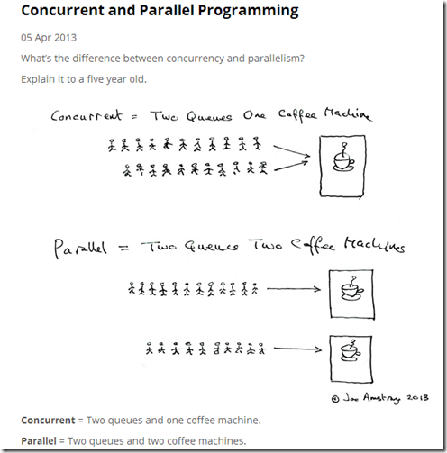

<!DOCTYPE html><html lang="zh-CN"><head><meta charset="UTF-8"><meta name="viewport" content="width=device-width,height=device-height,initial-scale=1.0"><meta name="apple-mobile-web-app-capable" content="yes"><meta http-equiv="X-UA-Compatible" content="ie=edge"><meta property="og:type" content="website"><meta name="twitter:card" content="summary"><style>.bespoke-marp-note,.bespoke-marp-osc,.bespoke-progress-parent{display:none;transition:none}@media screen{body[data-bespoke-view=""] .bespoke-marp-parent>.bespoke-marp-osc>button,body[data-bespoke-view=next] .bespoke-marp-parent>.bespoke-marp-osc>button,body[data-bespoke-view=presenter] .bespoke-marp-presenter-container .bespoke-marp-presenter-info-container button{-webkit-appearance:none;-moz-appearance:none;appearance:none;background-color:transparent;border:0;color:inherit;cursor:pointer;font-size:inherit;opacity:.8;outline:none;padding:0;transition:opacity .2s linear;-webkit-tap-highlight-color:transparent}body[data-bespoke-view=""] .bespoke-marp-parent>.bespoke-marp-osc>button:disabled,body[data-bespoke-view=next] .bespoke-marp-parent>.bespoke-marp-osc>button:disabled,body[data-bespoke-view=presenter] .bespoke-marp-presenter-container .bespoke-marp-presenter-info-container button:disabled{cursor:not-allowed;opacity:.15!important}body[data-bespoke-view=""] .bespoke-marp-parent>.bespoke-marp-osc>button:hover,body[data-bespoke-view=next] .bespoke-marp-parent>.bespoke-marp-osc>button:hover,body[data-bespoke-view=presenter] .bespoke-marp-presenter-container .bespoke-marp-presenter-info-container button:hover{opacity:1}body[data-bespoke-view=""] .bespoke-marp-parent>.bespoke-marp-osc>button:hover:active,body[data-bespoke-view=next] .bespoke-marp-parent>.bespoke-marp-osc>button:hover:active,body[data-bespoke-view=presenter] .bespoke-marp-presenter-container .bespoke-marp-presenter-info-container button:hover:active{opacity:.6}body[data-bespoke-view=""] .bespoke-marp-parent>.bespoke-marp-osc>button:hover:not(:disabled),body[data-bespoke-view=next] .bespoke-marp-parent>.bespoke-marp-osc>button:hover:not(:disabled),body[data-bespoke-view=presenter] .bespoke-marp-presenter-container .bespoke-marp-presenter-info-container button:hover:not(:disabled){transition:none}body[data-bespoke-view=""] .bespoke-marp-parent>.bespoke-marp-osc>button[data-bespoke-marp-osc=prev],body[data-bespoke-view=next] .bespoke-marp-parent>.bespoke-marp-osc>button[data-bespoke-marp-osc=prev],body[data-bespoke-view=presenter] .bespoke-marp-presenter-container .bespoke-marp-presenter-info-container button.bespoke-marp-presenter-info-page-prev{background:transparent url("") no-repeat 50%;background-size:contain;overflow:hidden;text-indent:100%;white-space:nowrap}body[data-bespoke-view=""] .bespoke-marp-parent>.bespoke-marp-osc>button[data-bespoke-marp-osc=next],body[data-bespoke-view=next] .bespoke-marp-parent>.bespoke-marp-osc>button[data-bespoke-marp-osc=next],body[data-bespoke-view=presenter] .bespoke-marp-presenter-container .bespoke-marp-presenter-info-container button.bespoke-marp-presenter-info-page-next{background:transparent url("") no-repeat 50%;background-size:contain;overflow:hidden;text-indent:100%;white-space:nowrap}body[data-bespoke-view=""] .bespoke-marp-parent>.bespoke-marp-osc>button[data-bespoke-marp-osc=fullscreen],body[data-bespoke-view=next] .bespoke-marp-parent>.bespoke-marp-osc>button[data-bespoke-marp-osc=fullscreen]{background:transparent url("") no-repeat 50%;background-size:contain;overflow:hidden;text-indent:100%;white-space:nowrap}body[data-bespoke-view=""] .bespoke-marp-parent>.bespoke-marp-osc>button.exit[data-bespoke-marp-osc=fullscreen],body[data-bespoke-view=next] .bespoke-marp-parent>.bespoke-marp-osc>button.exit[data-bespoke-marp-osc=fullscreen]{background-image:url("")}body[data-bespoke-view=""] .bespoke-marp-parent>.bespoke-marp-osc>button[data-bespoke-marp-osc=presenter],body[data-bespoke-view=next] .bespoke-marp-parent>.bespoke-marp-osc>button[data-bespoke-marp-osc=presenter]{background:transparent url("") no-repeat 50%;background-size:contain;overflow:hidden;text-indent:100%;white-space:nowrap}body,html{height:100%;margin:0}body{background:#000;overflow:hidden}svg.bespoke-marp-slide{content-visibility:hidden;z-index:-1;pointer-events:none;opacity:0}svg.bespoke-marp-slide.bespoke-marp-active{content-visibility:visible;z-index:0;pointer-events:auto;opacity:1}svg.bespoke-marp-slide.bespoke-marp-active.bespoke-marp-active-ready *{-webkit-animation-name:__bespoke_marp__!important;animation-name:__bespoke_marp__!important}@supports not (content-visibility:hidden){svg.bespoke-marp-slide[data-bespoke-marp-load=hideable]{display:none}svg.bespoke-marp-slide[data-bespoke-marp-load=hideable].bespoke-marp-active{display:block}}[data-bespoke-marp-fragment=inactive]{visibility:hidden}body[data-bespoke-view=""] .bespoke-marp-parent,body[data-bespoke-view=next] .bespoke-marp-parent{bottom:0;left:0;position:absolute;right:0;top:0}body[data-bespoke-view=""] .bespoke-marp-parent>.bespoke-marp-osc,body[data-bespoke-view=next] .bespoke-marp-parent>.bespoke-marp-osc{background:rgba(0,0,0,.65);border-radius:7px;bottom:50px;color:#fff;display:block;font-family:Helvetica,Arial,sans-serif;font-size:16px;left:50%;line-height:0;opacity:1;padding:12px;position:absolute;touch-action:manipulation;transform:translateX(-50%);transition:opacity .2s linear;-webkit-user-select:none;-moz-user-select:none;-ms-user-select:none;user-select:none;white-space:nowrap;z-index:1;will-change:transform}body[data-bespoke-view=""] .bespoke-marp-parent>.bespoke-marp-osc>*,body[data-bespoke-view=next] .bespoke-marp-parent>.bespoke-marp-osc>*{margin-left:6px}body[data-bespoke-view=""] .bespoke-marp-parent>.bespoke-marp-osc>:first-child,body[data-bespoke-view=next] .bespoke-marp-parent>.bespoke-marp-osc>:first-child{margin-left:0}body[data-bespoke-view=""] .bespoke-marp-parent>.bespoke-marp-osc>span,body[data-bespoke-view=next] .bespoke-marp-parent>.bespoke-marp-osc>span{opacity:.8}body[data-bespoke-view=""] .bespoke-marp-parent>.bespoke-marp-osc>span[data-bespoke-marp-osc=page],body[data-bespoke-view=next] .bespoke-marp-parent>.bespoke-marp-osc>span[data-bespoke-marp-osc=page]{display:inline-block;min-width:140px;text-align:center}body[data-bespoke-view=""] .bespoke-marp-parent>.bespoke-marp-osc>button[data-bespoke-marp-osc=fullscreen],body[data-bespoke-view=""] .bespoke-marp-parent>.bespoke-marp-osc>button[data-bespoke-marp-osc=next],body[data-bespoke-view=""] .bespoke-marp-parent>.bespoke-marp-osc>button[data-bespoke-marp-osc=presenter],body[data-bespoke-view=""] .bespoke-marp-parent>.bespoke-marp-osc>button[data-bespoke-marp-osc=prev],body[data-bespoke-view=next] .bespoke-marp-parent>.bespoke-marp-osc>button[data-bespoke-marp-osc=fullscreen],body[data-bespoke-view=next] .bespoke-marp-parent>.bespoke-marp-osc>button[data-bespoke-marp-osc=next],body[data-bespoke-view=next] .bespoke-marp-parent>.bespoke-marp-osc>button[data-bespoke-marp-osc=presenter],body[data-bespoke-view=next] .bespoke-marp-parent>.bespoke-marp-osc>button[data-bespoke-marp-osc=prev]{height:32px;line-height:32px;width:32px}body[data-bespoke-view=""] .bespoke-marp-parent.bespoke-marp-inactive,body[data-bespoke-view=next] .bespoke-marp-parent.bespoke-marp-inactive{cursor:none}body[data-bespoke-view=""] .bespoke-marp-parent.bespoke-marp-inactive>.bespoke-marp-osc,body[data-bespoke-view=next] .bespoke-marp-parent.bespoke-marp-inactive>.bespoke-marp-osc{opacity:0;pointer-events:none}body[data-bespoke-view=""] svg.bespoke-marp-slide,body[data-bespoke-view=next] svg.bespoke-marp-slide{height:100%;left:0;position:absolute;top:0;width:100%}body[data-bespoke-view=""] .bespoke-progress-parent{background:#222;display:flex;height:5px;width:100%}body[data-bespoke-view=""] .bespoke-progress-parent+.bespoke-marp-parent{top:5px}body[data-bespoke-view=""] .bespoke-progress-parent .bespoke-progress-bar{flex:0 0 0;background:#0288d1;transition:flex-basis .2s cubic-bezier(0,1,1,1)}body[data-bespoke-view=next]{background:transparent}body[data-bespoke-view=presenter]{background:#161616}body[data-bespoke-view=presenter] .bespoke-marp-presenter-container{font-family:Helvetica,Arial,sans-serif;height:100%;left:0;position:absolute;top:0;width:100%;display:grid;grid-template-columns:2fr 1fr;grid-template-rows:minmax(140px,1fr) 2fr 3em;grid-template-areas:"current next" "current note" "info    note"}body[data-bespoke-view=presenter] .bespoke-marp-presenter-container .bespoke-marp-parent{grid-area:current;position:relative;overflow:hidden}body[data-bespoke-view=presenter] .bespoke-marp-presenter-container .bespoke-marp-parent svg.bespoke-marp-slide{height:calc(100% - 40px);left:20px;position:absolute;pointer-events:none;top:20px;-webkit-user-select:none;-moz-user-select:none;-ms-user-select:none;user-select:none;width:calc(100% - 40px)}body[data-bespoke-view=presenter] .bespoke-marp-presenter-container .bespoke-marp-parent svg.bespoke-marp-slide.bespoke-marp-active{filter:drop-shadow(0 3px 10px rgba(0,0,0,.5))}body[data-bespoke-view=presenter] .bespoke-marp-presenter-container .bespoke-marp-presenter-next-container{background:#222;cursor:pointer;display:none;grid-area:next;overflow:hidden;position:relative}body[data-bespoke-view=presenter] .bespoke-marp-presenter-container .bespoke-marp-presenter-next-container.active{display:block}body[data-bespoke-view=presenter] .bespoke-marp-presenter-container .bespoke-marp-presenter-next-container iframe.bespoke-marp-presenter-next{background:transparent;border:0;display:block;filter:drop-shadow(0 3px 10px rgba(0,0,0,.5));height:calc(100% - 40px);left:20px;position:absolute;pointer-events:none;-webkit-user-select:none;-moz-user-select:none;-ms-user-select:none;user-select:none;top:20px;width:calc(100% - 40px)}body[data-bespoke-view=presenter] .bespoke-marp-presenter-container .bespoke-marp-presenter-note-container{background:#222;color:#eee;grid-area:note}body[data-bespoke-view=presenter] .bespoke-marp-presenter-container .bespoke-marp-presenter-note-container .bespoke-marp-note{margin:20px;width:calc(100% - 40px);height:calc(100% - 40px);box-sizing:border-box;font-size:1.1em;overflow:auto;padding-right:3px;white-space:pre-wrap;word-wrap:break-word;scrollbar-width:thin;scrollbar-color:hsla(0,0%,93.3%,.5) transparent}body[data-bespoke-view=presenter] .bespoke-marp-presenter-container .bespoke-marp-presenter-note-container .bespoke-marp-note::-webkit-scrollbar{width:6px}body[data-bespoke-view=presenter] .bespoke-marp-presenter-container .bespoke-marp-presenter-note-container .bespoke-marp-note::-webkit-scrollbar-track{background:transparent}body[data-bespoke-view=presenter] .bespoke-marp-presenter-container .bespoke-marp-presenter-note-container .bespoke-marp-note::-webkit-scrollbar-thumb{background:hsla(0,0%,93.3%,.5);border-radius:6px}body[data-bespoke-view=presenter] .bespoke-marp-presenter-container .bespoke-marp-presenter-note-container .bespoke-marp-note:empty{pointer-events:none}body[data-bespoke-view=presenter] .bespoke-marp-presenter-container .bespoke-marp-presenter-note-container .bespoke-marp-note.active{display:block}body[data-bespoke-view=presenter] .bespoke-marp-presenter-container .bespoke-marp-presenter-note-container .bespoke-marp-note p:first-child{margin-top:0}body[data-bespoke-view=presenter] .bespoke-marp-presenter-container .bespoke-marp-presenter-note-container .bespoke-marp-note p:last-child{margin-bottom:0}body[data-bespoke-view=presenter] .bespoke-marp-presenter-container .bespoke-marp-presenter-info-container{align-items:center;box-sizing:border-box;color:#eee;display:flex;flex-wrap:nowrap;grid-area:info;justify-content:center;padding:0 10px}body[data-bespoke-view=presenter] .bespoke-marp-presenter-container .bespoke-marp-presenter-info-container .bespoke-marp-presenter-info-page,body[data-bespoke-view=presenter] .bespoke-marp-presenter-container .bespoke-marp-presenter-info-container .bespoke-marp-presenter-info-time,body[data-bespoke-view=presenter] .bespoke-marp-presenter-container .bespoke-marp-presenter-info-container .bespoke-marp-presenter-info-timer{display:block;box-sizing:border-box;padding:0 10px;white-space:nowrap;width:100%}body[data-bespoke-view=presenter] .bespoke-marp-presenter-container .bespoke-marp-presenter-info-container button{height:1.5em;line-height:1.5em;width:1.5em}body[data-bespoke-view=presenter] .bespoke-marp-presenter-container .bespoke-marp-presenter-info-container .bespoke-marp-presenter-info-page{order:2;text-align:center}body[data-bespoke-view=presenter] .bespoke-marp-presenter-container .bespoke-marp-presenter-info-container .bespoke-marp-presenter-info-page .bespoke-marp-presenter-info-page-text{display:inline-block;min-width:120px;text-align:center}body[data-bespoke-view=presenter] .bespoke-marp-presenter-container .bespoke-marp-presenter-info-container .bespoke-marp-presenter-info-time{color:#999;order:1;text-align:left}body[data-bespoke-view=presenter] .bespoke-marp-presenter-container .bespoke-marp-presenter-info-container .bespoke-marp-presenter-info-timer{color:#999;order:3;text-align:right}}@media print{.bespoke-marp-presenter-info-container,.bespoke-marp-presenter-next-container,.bespoke-marp-presenter-note-container{display:none}}</style><style>@charset "UTF-8";@import url("https://fonts.googleapis.com/css?family=Lato:400,900|Roboto+Mono:400,700&display=swap");div#p>svg>foreignObject>section{width:1280px;height:720px;box-sizing:border-box;overflow:hidden;position:relative;scroll-snap-align:center center}div#p>svg>foreignObject>section:after{bottom:0;content:attr(data-marpit-pagination);padding:inherit;pointer-events:none;position:absolute;right:0}div#p>svg>foreignObject>section:not([data-marpit-pagination]):after{display:none}/* Normalization */div#p>svg>foreignObject>section h1{font-size:2em;margin:0.67em 0}div#p>svg>foreignObject>section video::-webkit-media-controls{will-change:transform}@page{size:1280px 720px;margin:0}@media print{body,html{background-color:#fff;margin:0;page-break-inside:avoid;break-inside:avoid-page}div#p>svg>foreignObject>section{page-break-before:always;break-before:page}div#p>svg>foreignObject>section,div#p>svg>foreignObject>section *{-webkit-print-color-adjust:exact!important;animation-delay:0s!important;animation-duration:0s!important;color-adjust:exact!important;transition:none!important}div#p>svg[data-marpit-svg]{display:block;height:100vh;width:100vw}}div#p>svg>foreignObject>section svg[data-marp-fitting=svg]{display:block;height:auto;width:100%}@supports (-ms-ime-align:auto){div#p>svg>foreignObject>section svg[data-marp-fitting=svg]{position:static}}div#p>svg>foreignObject>section svg[data-marp-fitting=svg].__reflow__{content:""}@supports (-ms-ime-align:auto){div#p>svg>foreignObject>section svg[data-marp-fitting=svg].__reflow__{position:relative}}div#p>svg>foreignObject>section [data-marp-fitting-svg-content]{display:table;white-space:nowrap}div#p>svg>foreignObject>section [data-marp-fitting-svg-content-wrap]{white-space:pre}div#p>svg>foreignObject>section img[data-marp-twemoji]{background:transparent;height:1em;margin:0 .05em 0 .1em;vertical-align:-.1em;width:1em}
/*!
 * Marp / Marpit Gaia theme.
 *
 * @theme gaia
 * @author Yuki Hattori
 *
 * @auto-scaling true
 * @size 4:3 960px 720px
 */div#p>svg>foreignObject>section .hljs{display:block;overflow-x:auto;padding:.5em;background:#000;color:#f8f8f8}div#p>svg>foreignObject>section .hljs-comment,div#p>svg>foreignObject>section .hljs-quote{color:#aeaeae;font-style:italic}div#p>svg>foreignObject>section .hljs-keyword,div#p>svg>foreignObject>section .hljs-selector-tag,div#p>svg>foreignObject>section .hljs-type{color:#e28964}div#p>svg>foreignObject>section .hljs-string{color:#65b042}div#p>svg>foreignObject>section .hljs-subst{color:#daefa3}div#p>svg>foreignObject>section .hljs-link,div#p>svg>foreignObject>section .hljs-regexp{color:#e9c062}div#p>svg>foreignObject>section .hljs-name,div#p>svg>foreignObject>section .hljs-section,div#p>svg>foreignObject>section .hljs-tag,div#p>svg>foreignObject>section .hljs-title{color:#89bdff}div#p>svg>foreignObject>section .hljs-class .hljs-title,div#p>svg>foreignObject>section .hljs-doctag{text-decoration:underline}div#p>svg>foreignObject>section .hljs-bullet,div#p>svg>foreignObject>section .hljs-number,div#p>svg>foreignObject>section .hljs-symbol{color:#3387cc}div#p>svg>foreignObject>section .hljs-params,div#p>svg>foreignObject>section .hljs-template-variable,div#p>svg>foreignObject>section .hljs-variable{color:#3e87e3}div#p>svg>foreignObject>section .hljs-attribute{color:#cda869}div#p>svg>foreignObject>section .hljs-meta{color:#8996a8}div#p>svg>foreignObject>section .hljs-formula{background-color:#0e2231;color:#f8f8f8;font-style:italic}div#p>svg>foreignObject>section .hljs-addition{background-color:#253b22;color:#f8f8f8}div#p>svg>foreignObject>section .hljs-deletion{background-color:#420e09;color:#f8f8f8}div#p>svg>foreignObject>section .hljs-selector-class{color:#9b703f}div#p>svg>foreignObject>section .hljs-selector-id{color:#8b98ab}div#p>svg>foreignObject>section .hljs-emphasis{font-style:italic}div#p>svg>foreignObject>section .hljs-strong{font-weight:700}div#p>svg>foreignObject>section svg[data-marp-fitting=svg]{max-height:580px}div#p>svg>foreignObject>section h1,div#p>svg>foreignObject>section h2,div#p>svg>foreignObject>section h3,div#p>svg>foreignObject>section h4,div#p>svg>foreignObject>section h5,div#p>svg>foreignObject>section h6{margin:.5em 0 0}div#p>svg>foreignObject>section h1 strong,div#p>svg>foreignObject>section h2 strong,div#p>svg>foreignObject>section h3 strong,div#p>svg>foreignObject>section h4 strong,div#p>svg>foreignObject>section h5 strong,div#p>svg>foreignObject>section h6 strong{font-weight:inherit}div#p>svg>foreignObject>section h1{font-size:1.8em}div#p>svg>foreignObject>section h2{font-size:1.5em}div#p>svg>foreignObject>section h3{font-size:1.3em}div#p>svg>foreignObject>section h4{font-size:1.1em}div#p>svg>foreignObject>section h5{font-size:1em}div#p>svg>foreignObject>section h6{font-size:.9em}div#p>svg>foreignObject>section blockquote,div#p>svg>foreignObject>section p{margin:1em 0 0}div#p>svg>foreignObject>section ol>li,div#p>svg>foreignObject>section ul>li{margin:.3em 0 0}div#p>svg>foreignObject>section ol>li>p,div#p>svg>foreignObject>section ul>li>p{margin:.6em 0 0}div#p>svg>foreignObject>section code{display:inline-block;font-family:Roboto Mono,monospace;font-size:.8em;letter-spacing:0;margin:-.1em .15em;padding:.1em .2em;vertical-align:baseline}div#p>svg>foreignObject>section pre{display:block;margin:1em 0 0;min-height:1em;overflow:visible}div#p>svg>foreignObject>section pre code{box-sizing:border-box;margin:0;min-width:100%;padding:.5em;font-size:.7em}div#p>svg>foreignObject>section pre code svg[data-marp-fitting=svg]{max-height:calc(580px - 1em)}div#p>svg>foreignObject>section blockquote{margin:1em 0 0;padding:0 1em;position:relative}div#p>svg>foreignObject>section blockquote:after,div#p>svg>foreignObject>section blockquote:before{content:"“";display:block;font-family:Times New Roman,serif;font-weight:700;position:absolute}div#p>svg>foreignObject>section blockquote:before{top:0;left:0}div#p>svg>foreignObject>section blockquote:after{right:0;bottom:0;transform:rotate(180deg)}div#p>svg>foreignObject>section blockquote>:first-child{margin-top:0}div#p>svg>foreignObject>section mark{background:transparent}div#p>svg>foreignObject>section table{border-spacing:0;border-collapse:collapse;margin:1em 0 0}div#p>svg>foreignObject>section table td,div#p>svg>foreignObject>section table th{padding:.2em .4em;border-width:1px;border-style:solid}div#p>svg>foreignObject>section{background-image:linear-gradient(135deg,hsla(0,0%,53.3%,0),hsla(0,0%,53.3%,.02) 50%,hsla(0,0%,100%,0) 0,hsla(0,0%,100%,.05));font-size:35px;font-family:Lato,Avenir Next,Avenir,Trebuchet MS,Segoe UI,sans-serif;height:720px;line-height:1.35;letter-spacing:1.25px;padding:70px;width:1280px;word-wrap:break-word;color:#455a64;background-color:#fff8e1}div#p>svg>foreignObject>section{--marpit-root-font-size:35px}div#p>svg>foreignObject>section>:first-child,div#p>svg>foreignObject>section>header:first-child+*{margin-top:0}div#p>svg>foreignObject>section a,div#p>svg>foreignObject>section mark{color:#0288d1}div#p>svg>foreignObject>section code{background:#6a7a7d;color:#fff8e1}div#p>svg>foreignObject>section h1 strong,div#p>svg>foreignObject>section h2 strong,div#p>svg>foreignObject>section h3 strong,div#p>svg>foreignObject>section h4 strong,div#p>svg>foreignObject>section h5 strong,div#p>svg>foreignObject>section h6 strong{color:#0288d1}div#p>svg>foreignObject>section pre>code{background:#455a64}div#p>svg>foreignObject>section blockquote:after,div#p>svg>foreignObject>section blockquote:before,div#p>svg>foreignObject>section footer,div#p>svg>foreignObject>section header,div#p>svg>foreignObject>section section:after{color:#6a7a7d}div#p>svg>foreignObject>section table td,div#p>svg>foreignObject>section table th{border-color:#455a64}div#p>svg>foreignObject>section table thead th{background:#455a64;color:#fff8e1}div#p>svg>foreignObject>section table tbody>tr:nth-child(odd) td,div#p>svg>foreignObject>section table tbody>tr:nth-child(odd) th{background:rgba(69,90,100,.1)}div#p>svg>foreignObject>section.invert{color:#fff8e1;background-color:#455a64}div#p>svg>foreignObject>section.invert a,div#p>svg>foreignObject>section.invert mark{color:#81d4fa}div#p>svg>foreignObject>section.invert code{background:#dad8c8;color:#455a64}div#p>svg>foreignObject>section.invert h1 strong,div#p>svg>foreignObject>section.invert h2 strong,div#p>svg>foreignObject>section.invert h3 strong,div#p>svg>foreignObject>section.invert h4 strong,div#p>svg>foreignObject>section.invert h5 strong,div#p>svg>foreignObject>section.invert h6 strong{color:#81d4fa}div#p>svg>foreignObject>section.invert pre>code{background:#fff8e1}div#p>svg>foreignObject>section.invert blockquote:after,div#p>svg>foreignObject>section.invert blockquote:before,div#p>svg>foreignObject>section.invert footer,div#p>svg>foreignObject>section.invert header,div#p>svg>foreignObject>section.invert section:after{color:#dad8c8}div#p>svg>foreignObject>section.invert table td,div#p>svg>foreignObject>section.invert table th{border-color:#fff8e1}div#p>svg>foreignObject>section.invert table thead th{background:#fff8e1;color:#455a64}div#p>svg>foreignObject>section.invert table tbody>tr:nth-child(odd) td,div#p>svg>foreignObject>section.invert table tbody>tr:nth-child(odd) th{background:rgba(255,248,225,.1)}div#p>svg>foreignObject>section.gaia{color:#fff8e1;background-color:#0288d1}div#p>svg>foreignObject>section.gaia a,div#p>svg>foreignObject>section.gaia mark{color:#81d4fa}div#p>svg>foreignObject>section.gaia code{background:#cce2de;color:#0288d1}div#p>svg>foreignObject>section.gaia h1 strong,div#p>svg>foreignObject>section.gaia h2 strong,div#p>svg>foreignObject>section.gaia h3 strong,div#p>svg>foreignObject>section.gaia h4 strong,div#p>svg>foreignObject>section.gaia h5 strong,div#p>svg>foreignObject>section.gaia h6 strong{color:#81d4fa}div#p>svg>foreignObject>section.gaia pre>code{background:#fff8e1}div#p>svg>foreignObject>section.gaia blockquote:after,div#p>svg>foreignObject>section.gaia blockquote:before,div#p>svg>foreignObject>section.gaia footer,div#p>svg>foreignObject>section.gaia header,div#p>svg>foreignObject>section.gaia section:after{color:#cce2de}div#p>svg>foreignObject>section.gaia table td,div#p>svg>foreignObject>section.gaia table th{border-color:#fff8e1}div#p>svg>foreignObject>section.gaia table thead th{background:#fff8e1;color:#0288d1}div#p>svg>foreignObject>section.gaia table tbody>tr:nth-child(odd) td,div#p>svg>foreignObject>section.gaia table tbody>tr:nth-child(odd) th{background:rgba(255,248,225,.1)}div#p>svg>foreignObject>section.lead{display:flex;flex-direction:column;flex-wrap:nowrap;justify-content:center}div#p>svg>foreignObject>section.lead h1,div#p>svg>foreignObject>section.lead h2,div#p>svg>foreignObject>section.lead h3,div#p>svg>foreignObject>section.lead h4,div#p>svg>foreignObject>section.lead h5,div#p>svg>foreignObject>section.lead h6{text-align:center}div#p>svg>foreignObject>section.lead h1 svg[data-marp-fitting=svg],div#p>svg>foreignObject>section.lead h2 svg[data-marp-fitting=svg],div#p>svg>foreignObject>section.lead h3 svg[data-marp-fitting=svg],div#p>svg>foreignObject>section.lead h4 svg[data-marp-fitting=svg],div#p>svg>foreignObject>section.lead h5 svg[data-marp-fitting=svg],div#p>svg>foreignObject>section.lead h6 svg[data-marp-fitting=svg]{--preserve-aspect-ratio:xMidYMid meet}div#p>svg>foreignObject>section.lead p{text-align:center}div#p>svg>foreignObject>section.lead blockquote>h1,div#p>svg>foreignObject>section.lead blockquote>h2,div#p>svg>foreignObject>section.lead blockquote>h3,div#p>svg>foreignObject>section.lead blockquote>h4,div#p>svg>foreignObject>section.lead blockquote>h5,div#p>svg>foreignObject>section.lead blockquote>h6,div#p>svg>foreignObject>section.lead blockquote>p{text-align:left}div#p>svg>foreignObject>section.lead blockquote svg[data-marp-fitting=svg]:not([data-marp-fitting-math]){--preserve-aspect-ratio:xMinYMin meet}div#p>svg>foreignObject>section.lead ol>li>p,div#p>svg>foreignObject>section.lead ul>li>p{text-align:left}div#p>svg>foreignObject>section.lead table{margin-left:auto;margin-right:auto}div#p>svg>foreignObject>section:after,div#p>svg>foreignObject>section footer,div#p>svg>foreignObject>section header{box-sizing:border-box;font-size:66%;height:70px;line-height:50px;overflow:hidden;padding:10px 25px;position:absolute}div#p>svg>foreignObject>section:after{--marpit-root-font-size:66%}div#p>svg>foreignObject>section header{top:0}div#p>svg>foreignObject>section footer,div#p>svg>foreignObject>section header{left:0;right:0}div#p>svg>foreignObject>section footer{bottom:0}div#p>svg>foreignObject>section:after{right:0;bottom:0;font-size:80%}div#p>svg>foreignObject>section:after{--marpit-root-font-size:80%}div#p>svg>foreignObject>section img{display:block;margin:0 auto}div#p>svg>foreignObject>section pre{display:block;position:relative;width:100%;margin:20px auto;text-align:left;font-size:28px;line-height:28px;word-wrap:break-word;box-shadow:0px 0px 6px rgba(0,0,0,0.3)}div#p>svg>foreignObject>section code{text-transform:none}div#p>svg>foreignObject>section pre code{display:block;padding:5px;overflow:auto;max-height:420px;word-wrap:normal}div#p>svg>foreignObject>section[data-marpit-advanced-background=background]{display:block!important;padding:0!important}div#p>svg>foreignObject>section[data-marpit-advanced-background=background]:after,div#p>svg>foreignObject>section[data-marpit-advanced-background=background]:before,div#p>svg>foreignObject>section[data-marpit-advanced-background=content]:after,div#p>svg>foreignObject>section[data-marpit-advanced-background=content]:before{display:none!important}div#p>svg>foreignObject>section[data-marpit-advanced-background=background]>div[data-marpit-advanced-background-container]{all:initial;display:flex;flex-direction:row;height:100%;overflow:hidden;width:100%}div#p>svg>foreignObject>section[data-marpit-advanced-background=background]>div[data-marpit-advanced-background-container][data-marpit-advanced-background-direction=vertical]{flex-direction:column}div#p>svg>foreignObject>section[data-marpit-advanced-background=background][data-marpit-advanced-background-split]>div[data-marpit-advanced-background-container]{width:var(--marpit-advanced-background-split,50%)}div#p>svg>foreignObject>section[data-marpit-advanced-background=background][data-marpit-advanced-background-split=right]>div[data-marpit-advanced-background-container]{margin-left:calc(100% - var(--marpit-advanced-background-split, 50%))}div#p>svg>foreignObject>section[data-marpit-advanced-background=background]>div[data-marpit-advanced-background-container]>figure{all:initial;background-position:center;background-repeat:no-repeat;background-size:cover;flex:auto;margin:0}div#p>svg>foreignObject>section[data-marpit-advanced-background=content],div#p>svg>foreignObject>section[data-marpit-advanced-background=pseudo]{background:transparent!important}div#p>svg>foreignObject>section[data-marpit-advanced-background=pseudo],div#p>svg[data-marpit-svg]>foreignObject[data-marpit-advanced-background=pseudo]{pointer-events:none!important}div#p>svg>foreignObject>section[data-marpit-advanced-background-split]{width:100%;height:100%}</style></head><body><div class="bespoke-marp-osc"><button data-bespoke-marp-osc="prev" tabindex="-1" title="Previous slide">Previous slide</button><span data-bespoke-marp-osc="page"></span><button data-bespoke-marp-osc="next" tabindex="-1" title="Next slide">Next slide</button><button data-bespoke-marp-osc="fullscreen" tabindex="-1" title="Toggle fullscreen (f)">Toggle fullscreen</button><button data-bespoke-marp-osc="presenter" tabindex="-1" title="Open presenter view (p)">Open presenter view</button></div><div id="p"><svg data-marpit-svg="" viewBox="0 0 1280 720"><foreignObject width="1280" height="720"><section data-paginate="true" data-background-color="#fff" data-class="lead" data-theme="gaia" class="lead" data-marpit-pagination="1" data-marpit-pagination-total="69" style="--paginate:true;--background-color:#fff;--class:lead;--theme:gaia;background-color:#fff;background-image:none;--marpit-advanced-background-split:30%;" data-marpit-advanced-background="background" data-marpit-advanced-background-split="right"><div data-marpit-advanced-background-container="true" data-marpit-advanced-background-direction="horizontal"><figure style="background-image:url(&quot;https://upload.wikimedia.org/wikipedia/zh/8/88/Java_logo.png&quot;);background-size:90%;"></figure></div></section></foreignObject><foreignObject width="70%" height="720"><section id="1" data-paginate="true" data-background-color="#fff" data-class="lead" data-theme="gaia" class="lead" data-marpit-pagination="1" data-marpit-pagination-total="69" style="--paginate:true;--background-color:#fff;--class:lead;--theme:gaia;background-color:#fff;background-image:none;--marpit-advanced-background-split:30%;" data-marpit-advanced-background="content" data-marpit-advanced-background-split="right">
<h1>Java高级程序设计</h1>
<h2>并发编程</h2>
<br />
<p><small><a href="https://docs.oracle.com/javase/tutorial/essential/concurrency/index.html">https://docs.oracle.com/javase/tutorial/essential/concurrency/index.html</a></small></p>
</section>
</foreignObject><foreignObject width="1280" height="720" data-marpit-advanced-background="pseudo"><section class="lead" style="" data-marpit-advanced-background="pseudo" data-marpit-pagination="1" data-marpit-pagination-total="69"></section></foreignObject></svg><svg data-marpit-svg="" viewBox="0 0 1280 720"><foreignObject width="1280" height="720"><section id="2" data-paginate="true" data-background-color="#fff" data-theme="gaia" data-marpit-pagination="2" data-marpit-pagination-total="69" style="--paginate:true;--background-color:#fff;--theme:gaia;background-color:#fff;background-image:none;">
<h2>并发</h2>
<blockquote>
<p>The world is concurrent.</p>
</blockquote>
<div align="right"> —— Joe Armstrong</div> 
<blockquote>
<p>Concurrency occurs when two or more execution flows are able to run simultaneously.</p>
</blockquote>
<div align="right"> —— Edsger Wybe Dijkstra </div> 
</section>
</foreignObject></svg><svg data-marpit-svg="" viewBox="0 0 1280 720"><foreignObject width="1280" height="720"><section id="3" data-paginate="true" data-background-color="#fff" data-theme="gaia" data-marpit-pagination="3" data-marpit-pagination-total="69" style="--paginate:true;--background-color:#fff;--theme:gaia;background-color:#fff;background-image:none;">
<h2>进程 vs. 线程</h2>
<ul>
<li>进程：是系统进行资源分配和调度的一个独立单位，也是一个具有独立功能的程序；</li>
<li>线程：线程依托于进程而存在，是CPU调度和分派的基本单位，它是比进程更小的能独立运行的基本单位。线程自己基本上不拥有系统资源，只拥有一点在运行中必不可少的资源(如程序计数器、一组寄存器和栈)，但是它可与同属一个进程的其他的线程共享进程所拥有的全部资源。</li>
</ul>
</section>
</foreignObject></svg><svg data-marpit-svg="" viewBox="0 0 1280 720"><foreignObject width="1280" height="720"><section data-paginate="true" data-background-color="#fff" data-theme="gaia" data-marpit-pagination="4" data-marpit-pagination-total="69" style="--paginate:true;--background-color:#fff;--theme:gaia;background-color:#fff;background-image:none;--marpit-advanced-background-split:60%;" data-marpit-advanced-background="background" data-marpit-advanced-background-split="right"><div data-marpit-advanced-background-container="true" data-marpit-advanced-background-direction="horizontal"><figure style="background-image:url(&quot;images/Process_thread.png&quot;);background-size:90%;"></figure></div></section></foreignObject><foreignObject width="40%" height="720"><section id="4" data-paginate="true" data-background-color="#fff" data-theme="gaia" data-marpit-pagination="4" data-marpit-pagination-total="69" style="--paginate:true;--background-color:#fff;--theme:gaia;background-color:#fff;background-image:none;--marpit-advanced-background-split:60%;" data-marpit-advanced-background="content" data-marpit-advanced-background-split="right">
<h2>进程 vs. 线程</h2>

<p><small>区别在于，进程属于资源分配的单位，而线程则是作业调度的单位；进程拥有自己的地址空间，而多个线程拥有自己的堆栈和局部变量，并共享所依托于进程的资源。</small></p>
</section>
</foreignObject><foreignObject width="1280" height="720" data-marpit-advanced-background="pseudo"><section style="" data-marpit-advanced-background="pseudo" data-marpit-pagination="4" data-marpit-pagination-total="69"></section></foreignObject></svg><svg data-marpit-svg="" viewBox="0 0 1280 720"><foreignObject width="1280" height="720"><section id="5" data-paginate="true" data-background-color="#fff" data-theme="gaia" data-marpit-pagination="5" data-marpit-pagination-total="69" style="--paginate:true;--background-color:#fff;--theme:gaia;background-color:#fff;background-image:none;">
<h2>多线程的意义</h2>
<ul>
<li>多进程操作的意义在于多个进程轮流共享CPU的时间片(针对单处理器情形，多处理器可理解为并行)，属于并发操作。</li>
<li>多线程的并发操作优势在于当程序遇到阻塞的情形。当程序的某个任务因外部条件问题，导致阻塞，如果没有并发，则整个程序停止，直到外部条件发生变化，使用并发后，程序中的其他任务还可以继续执行，如果没有阻塞，在单处理器上考虑多线程并发也就没有意义了，线程之间的切换会造成大量的时间消耗。</li>
</ul>
</section>
</foreignObject></svg><svg data-marpit-svg="" viewBox="0 0 1280 720"><foreignObject width="1280" height="720"><section id="6" data-paginate="true" data-background-color="#fff" data-theme="gaia" data-marpit-pagination="6" data-marpit-pagination-total="69" style="--paginate:true;--background-color:#fff;--theme:gaia;background-color:#fff;background-image:none;">
<h2>并发 vs 并行</h2>
<p></p>
</section>
</foreignObject></svg><svg data-marpit-svg="" viewBox="0 0 1280 720"><foreignObject width="1280" height="720"><section id="7" data-paginate="true" data-background-color="#fff" data-theme="gaia" data-marpit-pagination="7" data-marpit-pagination-total="69" style="--paginate:true;--background-color:#fff;--theme:gaia;background-color:#fff;background-image:none;">
<h2>JVM Threads</h2>
<p></p>
</section>
</foreignObject></svg><svg data-marpit-svg="" viewBox="0 0 1280 720"><foreignObject width="1280" height="720"><section id="8" data-paginate="true" data-background-color="#fff" data-theme="gaia" data-marpit-pagination="8" data-marpit-pagination-total="69" style="--paginate:true;--background-color:#fff;--theme:gaia;background-color:#fff;background-image:none;">
<h2>Java 并发机制</h2>
<ul>
<li>
<p>内置并发机制：对线程的直接支持</p>
</li>
<li>
<p>并发对象模型：不纯粹的Active Object模型</p>
<ul>
<li>同时存在 “主动”对象 和 “被动”对象</li>
</ul>
</li>
<li>
<p>Java 1.5+</p>
<ul>
<li>java.util.concurrent.*</li>
</ul>
</li>
</ul>
</section>
</foreignObject></svg><svg data-marpit-svg="" viewBox="0 0 1280 720"><foreignObject width="1280" height="720"><section id="9" data-paginate="true" data-background-color="#fff" data-theme="gaia" data-marpit-pagination="9" data-marpit-pagination-total="69" style="--paginate:true;--background-color:#fff;--theme:gaia;background-color:#fff;background-image:none;">
<h2>接触过多线程程序了吗？</h2>
<pre><code class="language-java"><svg data-marp-fitting="svg" data-marp-fitting-code><foreignObject><span data-marp-fitting-svg-content><span data-marp-fitting-svg-content-wrap><span class="hljs-keyword">public</span> <span class="hljs-class"><span class="hljs-keyword">class</span> <span class="hljs-title">QuoteServerThread</span> <span class="hljs-keyword">extends</span> <span class="hljs-title">Thread</span> </span>{
    <span class="hljs-keyword">protected</span> DatagramSocket socket = <span class="hljs-keyword">null</span>;
    <span class="hljs-keyword">protected</span> BufferedReader in = <span class="hljs-keyword">null</span>;
    <span class="hljs-keyword">protected</span> <span class="hljs-keyword">boolean</span> moreQuotes = <span class="hljs-keyword">true</span>;
    <span class="hljs-function"><span class="hljs-keyword">public</span> <span class="hljs-title">QuoteServerThread</span><span class="hljs-params">()</span> <span class="hljs-keyword">throws</span> IOException </span>{
	      <span class="hljs-keyword">this</span>(<span class="hljs-string">&quot;QuoteServerThread&quot;</span>);
    }
    <span class="hljs-function"><span class="hljs-keyword">public</span> <span class="hljs-title">QuoteServerThread</span><span class="hljs-params">(String name)</span> <span class="hljs-keyword">throws</span> IOException </span>{
        <span class="hljs-keyword">super</span>(name);
        socket = <span class="hljs-keyword">new</span> DatagramSocket(<span class="hljs-number">4445</span>);
        <span class="hljs-keyword">try</span> {
            in = <span class="hljs-keyword">new</span> BufferedReader(<span class="hljs-keyword">new</span> FileReader(<span class="hljs-string">&quot;one-liners.txt&quot;</span>));
        } <span class="hljs-keyword">catch</span> (FileNotFoundException e) {
            System.err.println(<span class="hljs-string">&quot;Could not open quote file. Serving time instead.&quot;</span>);
        }
    }
    <span class="hljs-function"><span class="hljs-keyword">public</span> <span class="hljs-keyword">void</span> <span class="hljs-title">run</span><span class="hljs-params">()</span> </span>{
        <span class="hljs-comment">//to do something;</span>
    }
}
</span></span></foreignObject></svg></code></pre>
</section>
</foreignObject></svg><svg data-marpit-svg="" viewBox="0 0 1280 720"><foreignObject width="1280" height="720"><section id="10" data-paginate="true" data-background-color="#fff" data-theme="gaia" data-marpit-pagination="10" data-marpit-pagination-total="69" style="--paginate:true;--background-color:#fff;--theme:gaia;background-color:#fff;background-image:none;">
<h2>接触过多线程程序了吗？</h2>
<pre><code class="language-java"><svg data-marp-fitting="svg" data-marp-fitting-code><foreignObject><span data-marp-fitting-svg-content><span data-marp-fitting-svg-content-wrap><span class="hljs-keyword">public</span> <span class="hljs-class"><span class="hljs-keyword">class</span> <span class="hljs-title">QuoteServer</span> </span>{
    <span class="hljs-function"><span class="hljs-keyword">public</span> <span class="hljs-keyword">static</span> <span class="hljs-keyword">void</span> <span class="hljs-title">main</span><span class="hljs-params">(String[] args)</span> <span class="hljs-keyword">throws</span> IOException </span>{
        <span class="hljs-keyword">new</span> QuoteServerThread().start();
    }
}
</span></span></foreignObject></svg></code></pre>
<p>还有Java NIO：</p>
<ul>
<li>由一个专门的线程(Selector)来处理所有的IO事件，并负责分发。</li>
<li>事件驱动机制：事件到的时候触发，而不是同步的去监视事件。</li>
<li>线程通讯：线程之间通过 wait,notify 等方式通讯。保证每次上下文切换都是有意义的。减少无谓的线程切换。</li>
</ul>
</section>
</foreignObject></svg><svg data-marpit-svg="" viewBox="0 0 1280 720"><foreignObject width="1280" height="720"><section id="11" data-paginate="true" data-background-color="#fff" data-theme="gaia" data-marpit-pagination="11" data-marpit-pagination-total="69" style="--paginate:true;--background-color:#fff;--theme:gaia;background-color:#fff;background-image:none;">
<h2>创建线程</h2>
<ul>
<li>实现Runnable接口</li>
<li>继承Thread</li>
</ul>
</section>
</foreignObject></svg><svg data-marpit-svg="" viewBox="0 0 1280 720"><foreignObject width="1280" height="720"><section id="12" data-paginate="true" data-background-color="#fff" data-theme="gaia" data-marpit-pagination="12" data-marpit-pagination-total="69" style="--paginate:true;--background-color:#fff;--theme:gaia;background-color:#fff;background-image:none;">
<h2>Runnable</h2>
<p><code>java.lang.Runnable</code></p>
<pre><code class="language-java"><svg data-marp-fitting="svg" data-marp-fitting-code><foreignObject><span data-marp-fitting-svg-content><span data-marp-fitting-svg-content-wrap><span class="hljs-keyword">public</span> <span class="hljs-class"><span class="hljs-keyword">interface</span> <span class="hljs-title">Runnable</span> </span>{
    <span class="hljs-function"><span class="hljs-keyword">public</span> <span class="hljs-keyword">abstract</span> <span class="hljs-keyword">void</span> <span class="hljs-title">run</span><span class="hljs-params">()</span></span>;
}

<span class="hljs-keyword">public</span> <span class="hljs-class"><span class="hljs-keyword">class</span> <span class="hljs-title">LiftOff</span> <span class="hljs-keyword">implements</span> <span class="hljs-title">Runnable</span> </span>{
    <span class="hljs-keyword">protected</span> <span class="hljs-keyword">int</span> countDown = <span class="hljs-number">10</span>; <span class="hljs-comment">// Default</span>
    <span class="hljs-keyword">private</span> <span class="hljs-keyword">static</span> <span class="hljs-keyword">int</span> taskCount = <span class="hljs-number">0</span>;
    <span class="hljs-keyword">private</span> <span class="hljs-keyword">final</span> <span class="hljs-keyword">int</span> id = taskCount++;
    <span class="hljs-function"><span class="hljs-keyword">public</span> <span class="hljs-title">LiftOff</span><span class="hljs-params">()</span> </span>{
    }
    <span class="hljs-function"><span class="hljs-keyword">public</span> <span class="hljs-title">LiftOff</span><span class="hljs-params">(<span class="hljs-keyword">int</span> countDown)</span> </span>{
        <span class="hljs-keyword">this</span>.countDown = countDown;
    }
    <span class="hljs-function"><span class="hljs-keyword">public</span> String <span class="hljs-title">status</span><span class="hljs-params">()</span> </span>{
        <span class="hljs-keyword">return</span> <span class="hljs-string">&quot;#&quot;</span> + id + <span class="hljs-string">&quot;(&quot;</span> +
                (countDown &gt; <span class="hljs-number">0</span> ? countDown : <span class="hljs-string">&quot;Liftoff!&quot;</span>) + <span class="hljs-string">&quot;), &quot;</span>;
    }
    <span class="hljs-function"><span class="hljs-keyword">public</span> <span class="hljs-keyword">void</span> <span class="hljs-title">run</span><span class="hljs-params">()</span> </span>{
        <span class="hljs-keyword">while</span> (countDown-- &gt; <span class="hljs-number">0</span>) {
            System.out.print(status());
            Thread.yield(); <span class="hljs-comment">//后面解释</span>
        }
    }
}
</span></span></foreignObject></svg></code></pre>
</section>
</foreignObject></svg><svg data-marpit-svg="" viewBox="0 0 1280 720"><foreignObject width="1280" height="720"><section id="13" data-paginate="true" data-background-color="#fff" data-theme="gaia" data-marpit-pagination="13" data-marpit-pagination-total="69" style="--paginate:true;--background-color:#fff;--theme:gaia;background-color:#fff;background-image:none;">
<h2>Runnable</h2>
<p><code>java.lang.Runnable</code></p>
<pre><code class="language-java"><svg data-marp-fitting="svg" data-marp-fitting-code><foreignObject><span data-marp-fitting-svg-content><span data-marp-fitting-svg-content-wrap><span class="hljs-keyword">public</span> <span class="hljs-class"><span class="hljs-keyword">class</span> <span class="hljs-title">MainThread</span> </span>{
    <span class="hljs-function"><span class="hljs-keyword">public</span> <span class="hljs-keyword">static</span> <span class="hljs-keyword">void</span> <span class="hljs-title">main</span><span class="hljs-params">(String[] args)</span> </span>{
        LiftOff launch = <span class="hljs-keyword">new</span> LiftOff();
        launch.run(); <span class="hljs-comment">//is it a thread?</span>
    }
}
</span></span></foreignObject></svg></code></pre>
<p><small><code>Runnable</code>接口仅仅定义“任务”</small></p>
<pre><code class="language-java"><svg data-marp-fitting="svg" data-marp-fitting-code><foreignObject><span data-marp-fitting-svg-content><span data-marp-fitting-svg-content-wrap>Runnable r = () -&gt; { task code };
</span></span></foreignObject></svg></code></pre>
</section>
</foreignObject></svg><svg data-marpit-svg="" viewBox="0 0 1280 720"><foreignObject width="1280" height="720"><section id="14" data-paginate="true" data-background-color="#fff" data-theme="gaia" data-marpit-pagination="14" data-marpit-pagination-total="69" style="--paginate:true;--background-color:#fff;--theme:gaia;background-color:#fff;background-image:none;">
<h2>Thread</h2>
<p><code>java.lang.Thread</code></p>
<pre><code class="language-java"><svg data-marp-fitting="svg" data-marp-fitting-code><foreignObject><span data-marp-fitting-svg-content><span data-marp-fitting-svg-content-wrap><span class="hljs-keyword">public</span> <span class="hljs-class"><span class="hljs-keyword">class</span> <span class="hljs-title">BasicThreads</span> </span>{
    <span class="hljs-function"><span class="hljs-keyword">public</span> <span class="hljs-keyword">static</span> <span class="hljs-keyword">void</span> <span class="hljs-title">main</span><span class="hljs-params">(String[] args)</span> </span>{
        <span class="hljs-comment">//把任务装进线程里</span>
        Thread t = <span class="hljs-keyword">new</span> Thread(<span class="hljs-keyword">new</span> LiftOff());
        t.start();
        System.out.println(<span class="hljs-string">&quot;Waiting for LiftOff&quot;</span>);
    }
}
</span></span></foreignObject></svg></code></pre>
<p><small><code>Thread</code>对象像是运载火箭，<code>Runnable</code>的实现对象就是一个荷载（payload）</small></p>
</section>
</foreignObject></svg><svg data-marpit-svg="" viewBox="0 0 1280 720"><foreignObject width="1280" height="720"><section id="15" data-paginate="true" data-background-color="#fff" data-theme="gaia" data-marpit-pagination="15" data-marpit-pagination-total="69" style="--paginate:true;--background-color:#fff;--theme:gaia;background-color:#fff;background-image:none;">
<h2>或者</h2>
<pre><code class="language-java"><svg data-marp-fitting="svg" data-marp-fitting-code><foreignObject><span data-marp-fitting-svg-content><span data-marp-fitting-svg-content-wrap><span class="hljs-keyword">public</span> <span class="hljs-class"><span class="hljs-keyword">class</span> <span class="hljs-title">SimpleThread</span> <span class="hljs-keyword">extends</span> <span class="hljs-title">Thread</span> </span>{
    <span class="hljs-keyword">private</span> <span class="hljs-keyword">int</span> countDown = <span class="hljs-number">5</span>;
    <span class="hljs-keyword">private</span> <span class="hljs-keyword">static</span> <span class="hljs-keyword">int</span> threadCount = <span class="hljs-number">0</span>;
    <span class="hljs-function"><span class="hljs-keyword">public</span> <span class="hljs-title">SimpleThread</span><span class="hljs-params">()</span> </span>{
        <span class="hljs-keyword">super</span>(Integer.toString(++threadCount));
        start();
    }
    <span class="hljs-function"><span class="hljs-keyword">public</span> String <span class="hljs-title">toString</span><span class="hljs-params">()</span> </span>{
        <span class="hljs-keyword">return</span> <span class="hljs-string">&quot;#&quot;</span> + getName() + <span class="hljs-string">&quot;(&quot;</span> + countDown + <span class="hljs-string">&quot;), &quot;</span>;
    }
    <span class="hljs-function"><span class="hljs-keyword">public</span> <span class="hljs-keyword">void</span> <span class="hljs-title">run</span><span class="hljs-params">()</span> </span>{
        <span class="hljs-keyword">while</span> (<span class="hljs-keyword">true</span>) {
            System.out.print(<span class="hljs-keyword">this</span>);
            <span class="hljs-keyword">if</span> (--countDown == <span class="hljs-number">0</span>)
                <span class="hljs-keyword">return</span>;
        }
    }
    <span class="hljs-function"><span class="hljs-keyword">public</span> <span class="hljs-keyword">static</span> <span class="hljs-keyword">void</span> <span class="hljs-title">main</span><span class="hljs-params">(String[] args)</span> </span>{
        <span class="hljs-keyword">for</span> (<span class="hljs-keyword">int</span> i = <span class="hljs-number">0</span>; i &lt; <span class="hljs-number">5</span>; i++)
            <span class="hljs-keyword">new</span> SimpleThread();
    }
}
</span></span></foreignObject></svg></code></pre>
</section>
</foreignObject></svg><svg data-marpit-svg="" viewBox="0 0 1280 720"><foreignObject width="1280" height="720"><section id="16" data-paginate="true" data-background-color="#fff" data-theme="gaia" data-marpit-pagination="16" data-marpit-pagination-total="69" style="--paginate:true;--background-color:#fff;--theme:gaia;background-color:#fff;background-image:none;">
<h2>WARNING</h2>
<ul>
<li>
<p>实际上<code>public class Thread implements Runnable</code></p>
</li>
<li>
<p>The run() method should not be called directly by the application. The system calls it.</p>
</li>
<li>
<p>If the run() method is called explicitly by the application then the code is executed sequentially not concurrently.</p>
</li>
</ul>
</section>
</foreignObject></svg><svg data-marpit-svg="" viewBox="0 0 1280 720"><foreignObject width="1280" height="720"><section id="17" data-paginate="true" data-background-color="#fff" data-theme="gaia" data-marpit-pagination="17" data-marpit-pagination-total="69" style="--paginate:true;--background-color:#fff;--theme:gaia;background-color:#fff;background-image:none;">
<h2>多线程，走起</h2>
<pre><code class="language-java"><svg data-marp-fitting="svg" data-marp-fitting-code><foreignObject><span data-marp-fitting-svg-content><span data-marp-fitting-svg-content-wrap><span class="hljs-keyword">public</span> <span class="hljs-class"><span class="hljs-keyword">class</span> <span class="hljs-title">MoreBasicThreads</span> </span>{
    <span class="hljs-function"><span class="hljs-keyword">public</span> <span class="hljs-keyword">static</span> <span class="hljs-keyword">void</span> <span class="hljs-title">main</span><span class="hljs-params">(String[] args)</span> </span>{
        <span class="hljs-keyword">for</span> (<span class="hljs-keyword">int</span> i = <span class="hljs-number">0</span>; i &lt; <span class="hljs-number">5</span>; i++)
            <span class="hljs-keyword">new</span> Thread(<span class="hljs-keyword">new</span> LiftOff()).start();
        System.out.println(<span class="hljs-string">&quot;Waiting for LiftOff&quot;</span>);
    }
}
</span></span></foreignObject></svg></code></pre>
<p>直接启动多个<font color=red>Thread</font></p>
</section>
</foreignObject></svg><svg data-marpit-svg="" viewBox="0 0 1280 720"><foreignObject width="1280" height="720"><section id="18" data-paginate="true" data-background-color="#fff" data-theme="gaia" data-marpit-pagination="18" data-marpit-pagination-total="69" style="--paginate:true;--background-color:#fff;--theme:gaia;background-color:#fff;background-image:none;">
<h2>或者用ExecutorService启动</h2>
<pre><code class="language-java"><svg data-marp-fitting="svg" data-marp-fitting-code><foreignObject><span data-marp-fitting-svg-content><span data-marp-fitting-svg-content-wrap><span class="hljs-keyword">public</span> <span class="hljs-class"><span class="hljs-keyword">class</span> <span class="hljs-title">CachedThreadPool</span> </span>{
    <span class="hljs-function"><span class="hljs-keyword">public</span> <span class="hljs-keyword">static</span> <span class="hljs-keyword">void</span> <span class="hljs-title">main</span><span class="hljs-params">(String[] args)</span> </span>{
        ExecutorService exec = Executors.newCachedThreadPool();
        <span class="hljs-keyword">for</span> (<span class="hljs-keyword">int</span> i = <span class="hljs-number">0</span>; i &lt; <span class="hljs-number">5</span>; i++)
            exec.execute(<span class="hljs-keyword">new</span> LiftOff());
        exec.shutdown();
    }
}
</span></span></foreignObject></svg></code></pre>
<p><small><code>CachedThreadPool</code>：根据需要创建新线程的线程池，如果现有线程没有可用的，则创建一个新线程并添加到池中，如果有被使用完但是还没销毁的线程，就复用该线程</small></p>
</section>
</foreignObject></svg><svg data-marpit-svg="" viewBox="0 0 1280 720"><foreignObject width="1280" height="720"><section id="19" data-paginate="true" data-background-color="#fff" data-theme="gaia" data-marpit-pagination="19" data-marpit-pagination-total="69" style="--paginate:true;--background-color:#fff;--theme:gaia;background-color:#fff;background-image:none;">
<h2>线程池？</h2>
<ul>
<li>在面向对象编程中，创建和销毁对象是很费时间的，因为创建一个对象要获取内存资源或者其它更多资源。</li>
<li>在Java中更是如此，虚拟机将试图跟踪每一个对象，以便能够在对象销毁后进行垃圾回收。</li>
<li>所以提高服务程序效率的一个手段就是尽可能减少创建和销毁对象的次数，特别是一些很耗资源的对象创建和销毁。</li>
<li>如何利用已有对象来服务就是一个需要解决的关键问题，其实这就是一些&quot;池化资源&quot;技术产生的原因。</li>
</ul>
</section>
</foreignObject></svg><svg data-marpit-svg="" viewBox="0 0 1280 720"><foreignObject width="1280" height="720"><section id="20" data-paginate="true" data-background-color="#fff" data-theme="gaia" data-marpit-pagination="20" data-marpit-pagination-total="69" style="--paginate:true;--background-color:#fff;--theme:gaia;background-color:#fff;background-image:none;">
<h2>或者另一种策略</h2>
<pre><code class="language-java"><svg data-marp-fitting="svg" data-marp-fitting-code><foreignObject><span data-marp-fitting-svg-content><span data-marp-fitting-svg-content-wrap><span class="hljs-keyword">public</span> <span class="hljs-class"><span class="hljs-keyword">class</span> <span class="hljs-title">FixedThreadPool</span> </span>{
    <span class="hljs-function"><span class="hljs-keyword">public</span> <span class="hljs-keyword">static</span> <span class="hljs-keyword">void</span> <span class="hljs-title">main</span><span class="hljs-params">(String[] args)</span> </span>{
        <span class="hljs-comment">// Constructor argument is number of threads:</span>
        ExecutorService exec = Executors.newFixedThreadPool(<span class="hljs-number">5</span>);
        <span class="hljs-keyword">for</span> (<span class="hljs-keyword">int</span> i = <span class="hljs-number">0</span>; i &lt; <span class="hljs-number">5</span>; i++)
            exec.execute(<span class="hljs-keyword">new</span> LiftOff());
        exec.shutdown();
    }
}
</span></span></foreignObject></svg></code></pre>
<p><small>创建一个固定线程数的线程池，在任何时候最多只有n个线程被创建。如果在所有线程都处于活动状态时，有其他任务提交，他们将等待队列中直到线程可用。如果任何线程由于执行过程中的故障而终止，将会有一个新线程取代这个线程执行后续任务。</small></p>
</section>
</foreignObject></svg><svg data-marpit-svg="" viewBox="0 0 1280 720"><foreignObject width="1280" height="720"><section id="21" data-paginate="true" data-background-color="#fff" data-theme="gaia" data-marpit-pagination="21" data-marpit-pagination-total="69" style="--paginate:true;--background-color:#fff;--theme:gaia;background-color:#fff;background-image:none;">
<h2>问题</h2>
<ul>
<li>如果需要获得异步执行的任务结果怎么办？</li>
</ul>
<p><code>Callable&lt;V&gt;</code>：封装异步运行的任务，有返回值</p>
<pre><code class="language-java"><svg data-marp-fitting="svg" data-marp-fitting-code><foreignObject><span data-marp-fitting-svg-content><span data-marp-fitting-svg-content-wrap><span class="hljs-keyword">public</span> <span class="hljs-class"><span class="hljs-keyword">interface</span> <span class="hljs-title">Callable</span>&lt;<span class="hljs-title">V</span>&gt; </span>{
    <span class="hljs-function">V <span class="hljs-title">call</span><span class="hljs-params">()</span> <span class="hljs-keyword">throws</span> Exception</span>;
}
</span></span></foreignObject></svg></code></pre>
<p><code>Future&lt;V&gt;</code>：保存异步计算的结果</p>
<pre><code class="language-java"><svg data-marp-fitting="svg" data-marp-fitting-code><foreignObject><span data-marp-fitting-svg-content><span data-marp-fitting-svg-content-wrap><span class="hljs-function">V <span class="hljs-title">get</span><span class="hljs-params">()</span> <span class="hljs-comment">//阻塞，直到计算完成</span>
V <span class="hljs-title">get</span><span class="hljs-params">(<span class="hljs-keyword">long</span> timeout, TImeUnit unit)</span>
<span class="hljs-keyword">void</span> <span class="hljs-title">cancel</span><span class="hljs-params">(<span class="hljs-keyword">boolean</span> mayInterrupt)</span>
<span class="hljs-keyword">boolean</span> <span class="hljs-title">isCancelled</span><span class="hljs-params">()</span>
<span class="hljs-keyword">boolean</span> <span class="hljs-title">isDone</span><span class="hljs-params">()</span>
</span></span></span></foreignObject></svg></code></pre>
</section>
</foreignObject></svg><svg data-marpit-svg="" viewBox="0 0 1280 720"><foreignObject width="1280" height="720"><section id="22" data-paginate="true" data-background-color="#fff" data-theme="gaia" data-marpit-pagination="22" data-marpit-pagination-total="69" style="--paginate:true;--background-color:#fff;--theme:gaia;background-color:#fff;background-image:none;">
<h2>例子</h2>
<pre><code class="language-java"><svg data-marp-fitting="svg" data-marp-fitting-code><foreignObject><span data-marp-fitting-svg-content><span data-marp-fitting-svg-content-wrap><span class="hljs-class"><span class="hljs-keyword">class</span> <span class="hljs-title">TaskWithResult</span> <span class="hljs-keyword">implements</span> <span class="hljs-title">Callable</span>&lt;<span class="hljs-title">String</span>&gt; </span>{
    <span class="hljs-keyword">private</span> <span class="hljs-keyword">int</span> id;
    <span class="hljs-function"><span class="hljs-keyword">public</span> <span class="hljs-title">TaskWithResult</span><span class="hljs-params">(<span class="hljs-keyword">int</span> id)</span> </span>{
        <span class="hljs-keyword">this</span>.id = id;
    }
    <span class="hljs-function"><span class="hljs-keyword">public</span> String <span class="hljs-title">call</span><span class="hljs-params">()</span> </span>{
        <span class="hljs-keyword">return</span> <span class="hljs-string">&quot;result of TaskWithResult &quot;</span> + id;
    }
}
</span></span></foreignObject></svg></code></pre>
</section>
</foreignObject></svg><svg data-marpit-svg="" viewBox="0 0 1280 720"><foreignObject width="1280" height="720"><section id="23" data-paginate="true" data-background-color="#fff" data-theme="gaia" data-marpit-pagination="23" data-marpit-pagination-total="69" style="--paginate:true;--background-color:#fff;--theme:gaia;background-color:#fff;background-image:none;">
<h2>例子</h2>
<pre><code class="language-java"><svg data-marp-fitting="svg" data-marp-fitting-code><foreignObject><span data-marp-fitting-svg-content><span data-marp-fitting-svg-content-wrap><span class="hljs-keyword">public</span> <span class="hljs-class"><span class="hljs-keyword">class</span> <span class="hljs-title">CallableDemo</span> </span>{
    <span class="hljs-function"><span class="hljs-keyword">public</span> <span class="hljs-keyword">static</span> <span class="hljs-keyword">void</span> <span class="hljs-title">main</span><span class="hljs-params">(String[] args)</span> </span>{
        ExecutorService exec = Executors.newCachedThreadPool();
        ArrayList&lt;Future&lt;String&gt;&gt; results = <span class="hljs-keyword">new</span> ArrayList&lt;Future&lt;String&gt;&gt;();
        <span class="hljs-keyword">for</span> (<span class="hljs-keyword">int</span> i = <span class="hljs-number">0</span>; i &lt; <span class="hljs-number">10</span>; i++)
            results.add(exec.submit(<span class="hljs-keyword">new</span> TaskWithResult(i)));
        <span class="hljs-keyword">for</span> (Future&lt;String&gt; fs : results)
            <span class="hljs-keyword">try</span> {
                <span class="hljs-comment">// get() blocks until completion:</span>
                System.out.println(fs.get());
            } <span class="hljs-keyword">catch</span> (InterruptedException e) {
                System.out.println(e);
                <span class="hljs-keyword">return</span>;
            } <span class="hljs-keyword">catch</span> (ExecutionException e) {
                System.out.println(e);
            } <span class="hljs-keyword">finally</span> {
                exec.shutdown();
            }
    }
}
</span></span></foreignObject></svg></code></pre>
</section>
</foreignObject></svg><svg data-marpit-svg="" viewBox="0 0 1280 720"><foreignObject width="1280" height="720"><section id="24" data-paginate="true" data-background-color="#fff" data-theme="gaia" data-marpit-pagination="24" data-marpit-pagination-total="69" style="--paginate:true;--background-color:#fff;--theme:gaia;background-color:#fff;background-image:none;">
<h2>Callable</h2>
<pre><code class="language-java"><svg data-marp-fitting="svg" data-marp-fitting-code><foreignObject><span data-marp-fitting-svg-content><span data-marp-fitting-svg-content-wrap><span class="hljs-class"><span class="hljs-keyword">class</span> <span class="hljs-title">MyCallable</span> <span class="hljs-keyword">implements</span> <span class="hljs-title">Callable</span>&lt;<span class="hljs-title">String</span>&gt;</span>{
    <span class="hljs-meta">@Override</span>
    <span class="hljs-function"><span class="hljs-keyword">public</span> String <span class="hljs-title">call</span><span class="hljs-params">()</span> <span class="hljs-keyword">throws</span> Exception </span>{
        System.out.println(<span class="hljs-string">&quot;做一些耗时的任务...&quot;</span>);
        Thread.sleep(<span class="hljs-number">5000</span>);
        <span class="hljs-keyword">return</span> <span class="hljs-string">&quot;OK&quot;</span>;
    }
}
</span></span></foreignObject></svg></code></pre>
</section>
</foreignObject></svg><svg data-marpit-svg="" viewBox="0 0 1280 720"><foreignObject width="1280" height="720"><section id="25" data-paginate="true" data-background-color="#fff" data-theme="gaia" data-marpit-pagination="25" data-marpit-pagination-total="69" style="--paginate:true;--background-color:#fff;--theme:gaia;background-color:#fff;background-image:none;">
<h2>Future</h2>
<pre><code class="language-java"><svg data-marp-fitting="svg" data-marp-fitting-code><foreignObject><span data-marp-fitting-svg-content><span data-marp-fitting-svg-content-wrap><span class="hljs-keyword">public</span> <span class="hljs-class"><span class="hljs-keyword">class</span> <span class="hljs-title">FutureSimpleDemo</span> </span>{
    <span class="hljs-function"><span class="hljs-keyword">public</span> <span class="hljs-keyword">static</span> <span class="hljs-keyword">void</span> <span class="hljs-title">main</span><span class="hljs-params">(String[] args)</span> <span class="hljs-keyword">throws</span> InterruptedException, ExecutionException </span>{
        ExecutorService executorService = Executors.newCachedThreadPool();
        Future&lt;String&gt; future = executorService.submit(<span class="hljs-keyword">new</span> MyCallable());
        System.out.println(<span class="hljs-string">&quot;do something...&quot;</span>);
        System.out.println(<span class="hljs-string">&quot;得到异步任务返回结果：&quot;</span> + future.get());
        System.out.println(<span class="hljs-string">&quot;Completed!&quot;</span>);
    }
}
</span></span></foreignObject></svg></code></pre>
<p><small>当调用<code>Future</code>的<code>get()</code>方法以获得结果时，当前线程就开始阻塞，直接<code>call()</code>方法结束返回结果。</small></p>
</section>
</foreignObject></svg><svg data-marpit-svg="" viewBox="0 0 1280 720"><foreignObject width="1280" height="720"><section id="26" data-paginate="true" data-background-color="#fff" data-theme="gaia" data-marpit-pagination="26" data-marpit-pagination-total="69" style="--paginate:true;--background-color:#fff;--theme:gaia;background-color:#fff;background-image:none;">
<h2>线程池常见用法</h2>
<ul>
<li>调用<code>Executors</code>类的静态方法<code>newCachedThreadPool</code>或者<code>newFixedThreadPool</code></li>
<li>调用<code>submit</code>提交<code>Runnalbe</code>或<code>Callable</code>对象</li>
<li>保存好返回的<code>Future</code>对象，以便得到结果或者取消任务</li>
<li>当不想再提交任何任务时，调用<code>shutdown</code></li>
</ul>
</section>
</foreignObject></svg><svg data-marpit-svg="" viewBox="0 0 1280 720"><foreignObject width="1280" height="720"><section id="27" data-paginate="true" data-background-color="#fff" data-theme="gaia" data-marpit-pagination="27" data-marpit-pagination-total="69" style="--paginate:true;--background-color:#fff;--theme:gaia;background-color:#fff;background-image:none;">
<h2>Sleep 睡眠</h2>
<ul>
<li>suspend execution for a specified period</li>
</ul>
<pre><code class="language-java"><svg data-marp-fitting="svg" data-marp-fitting-code><foreignObject><span data-marp-fitting-svg-content><span data-marp-fitting-svg-content-wrap><span class="hljs-keyword">public</span> <span class="hljs-class"><span class="hljs-keyword">class</span> <span class="hljs-title">SleepingTask</span> <span class="hljs-keyword">extends</span> <span class="hljs-title">LiftOff</span> </span>{
    <span class="hljs-function"><span class="hljs-keyword">public</span> <span class="hljs-keyword">void</span> <span class="hljs-title">run</span><span class="hljs-params">()</span> </span>{
        <span class="hljs-keyword">try</span> {
            <span class="hljs-keyword">while</span> (countDown-- &gt; <span class="hljs-number">0</span>) {
                System.out.print(status());
                <span class="hljs-comment">// Old-style: Thread.sleep(100);</span>
                TimeUnit.MILLISECONDS.sleep(<span class="hljs-number">100</span>);
            }
        } <span class="hljs-keyword">catch</span> (InterruptedException e) {
            System.err.println(<span class="hljs-string">&quot;Interrupted&quot;</span>);  <span class="hljs-comment">//可能被打断</span>
        }
    }
</span></span></foreignObject></svg></code></pre>
</section>
</foreignObject></svg><svg data-marpit-svg="" viewBox="0 0 1280 720"><foreignObject width="1280" height="720"><section id="28" data-paginate="true" data-background-color="#fff" data-theme="gaia" data-marpit-pagination="28" data-marpit-pagination-total="69" style="--paginate:true;--background-color:#fff;--theme:gaia;background-color:#fff;background-image:none;">
<pre><code class="language-java"><svg data-marp-fitting="svg" data-marp-fitting-code><foreignObject><span data-marp-fitting-svg-content><span data-marp-fitting-svg-content-wrap>    <span class="hljs-function"><span class="hljs-keyword">public</span> <span class="hljs-keyword">static</span> <span class="hljs-keyword">void</span> <span class="hljs-title">main</span><span class="hljs-params">(String[] args)</span> </span>{
        ExecutorService exec = Executors.newCachedThreadPool();
        <span class="hljs-keyword">for</span> (<span class="hljs-keyword">int</span> i = <span class="hljs-number">0</span>; i &lt; <span class="hljs-number">5</span>; i++)
            exec.execute(<span class="hljs-keyword">new</span> SleepingTask());
        exec.shutdown();
    }
}
</span></span></foreignObject></svg></code></pre>
<p><small>运行结果看起来很均衡，但实际并不完全如此...跟<code>yield()</code>语义不一样</small></p>
</section>
</foreignObject></svg><svg data-marpit-svg="" viewBox="0 0 1280 720"><foreignObject width="1280" height="720"><section id="29" data-paginate="true" data-background-color="#fff" data-theme="gaia" data-marpit-pagination="29" data-marpit-pagination-total="69" style="--paginate:true;--background-color:#fff;--theme:gaia;background-color:#fff;background-image:none;">
<h2>Yield 让位 </h2>
<ul>
<li><code>yield</code>和<code>sleep</code>的主要区别：
<ul>
<li><small>yield方法会临时暂停当前正在执行的线程，来让有同样优先级的正在等待的线程有机会执行</small></li>
<li><small>如果没有正在等待的线程，或者所有正在等待的线程的优先级都比较低，那么该线程会继续运行</small></li>
<li><small>执行了yield方法的线程什么时候会继续运行由线程调度器来决定，不同的厂商可能有不同的行为</small></li>
<li><small>yield方法不保证当前的线程会暂停或者停止，但是可以保证当前线程在调用yield方法时会放弃CPU</small></li>
</ul>
</li>
</ul>
</section>
</foreignObject></svg><svg data-marpit-svg="" viewBox="0 0 1280 720"><foreignObject width="1280" height="720"><section id="30" data-paginate="true" data-background-color="#fff" data-theme="gaia" data-marpit-pagination="30" data-marpit-pagination-total="69" style="--paginate:true;--background-color:#fff;--theme:gaia;background-color:#fff;background-image:none;">
<h2>Priority 优先级</h2>
<pre><code class="language-java"><svg data-marp-fitting="svg" data-marp-fitting-code><foreignObject><span data-marp-fitting-svg-content><span data-marp-fitting-svg-content-wrap><span class="hljs-keyword">public</span> <span class="hljs-class"><span class="hljs-keyword">class</span> <span class="hljs-title">SimplePriorities</span> <span class="hljs-keyword">implements</span> <span class="hljs-title">Runnable</span> </span>{
    <span class="hljs-keyword">private</span> <span class="hljs-keyword">int</span> countDown = <span class="hljs-number">5</span>;
    <span class="hljs-keyword">private</span> <span class="hljs-keyword">volatile</span> <span class="hljs-keyword">double</span> d; <span class="hljs-comment">// No optimization 后面再解释</span>
    <span class="hljs-keyword">private</span> <span class="hljs-keyword">int</span> priority;
    <span class="hljs-function"><span class="hljs-keyword">public</span> <span class="hljs-title">SimplePriorities</span><span class="hljs-params">(<span class="hljs-keyword">int</span> priority)</span> </span>{
        <span class="hljs-keyword">this</span>.priority = priority;
    }
    <span class="hljs-function"><span class="hljs-keyword">public</span> <span class="hljs-keyword">void</span> <span class="hljs-title">run</span><span class="hljs-params">()</span> </span>{
        Thread.currentThread().setPriority(priority);
        <span class="hljs-keyword">while</span> (<span class="hljs-keyword">true</span>) {
            <span class="hljs-comment">// An expensive, interruptable operation:</span>
            <span class="hljs-keyword">for</span> (<span class="hljs-keyword">int</span> i = <span class="hljs-number">1</span>; i &lt; <span class="hljs-number">100000</span>; i++) {
                d += (Math.PI + Math.E) / (<span class="hljs-keyword">double</span>) i;
                <span class="hljs-keyword">if</span> (i % <span class="hljs-number">1000</span> == <span class="hljs-number">0</span>)
                    Thread.yield();
            }
            System.out.println(<span class="hljs-keyword">this</span>);
            <span class="hljs-keyword">if</span> (--countDown == <span class="hljs-number">0</span>) <span class="hljs-keyword">return</span>;
        }
    }
</span></span></foreignObject></svg></code></pre>
</section>
</foreignObject></svg><svg data-marpit-svg="" viewBox="0 0 1280 720"><foreignObject width="1280" height="720"><section id="31" data-paginate="true" data-background-color="#fff" data-theme="gaia" data-marpit-pagination="31" data-marpit-pagination-total="69" style="--paginate:true;--background-color:#fff;--theme:gaia;background-color:#fff;background-image:none;">
<pre><code class="language-java"><svg data-marp-fitting="svg" data-marp-fitting-code><foreignObject><span data-marp-fitting-svg-content><span data-marp-fitting-svg-content-wrap>    <span class="hljs-function"><span class="hljs-keyword">public</span> String <span class="hljs-title">toString</span><span class="hljs-params">()</span> </span>{
        <span class="hljs-keyword">return</span> Thread.currentThread() + <span class="hljs-string">&quot;: &quot;</span> + countDown;
    }

    <span class="hljs-function"><span class="hljs-keyword">public</span> <span class="hljs-keyword">static</span> <span class="hljs-keyword">void</span> <span class="hljs-title">main</span><span class="hljs-params">(String[] args)</span> </span>{
        ExecutorService exec = Executors.newCachedThreadPool();
        <span class="hljs-keyword">for</span> (<span class="hljs-keyword">int</span> i = <span class="hljs-number">0</span>; i &lt; <span class="hljs-number">5</span>; i++)
            exec.execute(
                    <span class="hljs-keyword">new</span> SimplePriorities(Thread.MIN_PRIORITY));
        exec.execute(
                <span class="hljs-keyword">new</span> SimplePriorities(Thread.MAX_PRIORITY));
        exec.shutdown();
    }
}
</span></span></foreignObject></svg></code></pre>
<p>改变线程优先级这件事可以做，但尽量不要做</p>
</section>
</foreignObject></svg><svg data-marpit-svg="" viewBox="0 0 1280 720"><foreignObject width="1280" height="720"><section id="32" data-paginate="true" data-background-color="#fff" data-theme="gaia" data-marpit-pagination="32" data-marpit-pagination-total="69" style="--paginate:true;--background-color:#fff;--theme:gaia;background-color:#fff;background-image:none;">
<h2>Daemon 线程</h2>
<pre><code class="language-java"><svg data-marp-fitting="svg" data-marp-fitting-code><foreignObject><span data-marp-fitting-svg-content><span data-marp-fitting-svg-content-wrap><span class="hljs-keyword">public</span> <span class="hljs-class"><span class="hljs-keyword">class</span> <span class="hljs-title">SimpleDaemons</span> <span class="hljs-keyword">implements</span> <span class="hljs-title">Runnable</span> </span>{
    <span class="hljs-function"><span class="hljs-keyword">public</span> <span class="hljs-keyword">void</span> <span class="hljs-title">run</span><span class="hljs-params">()</span> </span>{
        <span class="hljs-keyword">try</span> {
            <span class="hljs-keyword">while</span> (<span class="hljs-keyword">true</span>) {
                TimeUnit.MILLISECONDS.sleep(<span class="hljs-number">100</span>);
                print(Thread.currentThread() + <span class="hljs-string">&quot; &quot;</span> + <span class="hljs-keyword">this</span>);
            }
        } <span class="hljs-keyword">catch</span> (InterruptedException e) {
            print(<span class="hljs-string">&quot;sleep() interrupted&quot;</span>);
        }
    }
</span></span></foreignObject></svg></code></pre>
</section>
</foreignObject></svg><svg data-marpit-svg="" viewBox="0 0 1280 720"><foreignObject width="1280" height="720"><section id="33" data-paginate="true" data-background-color="#fff" data-theme="gaia" data-marpit-pagination="33" data-marpit-pagination-total="69" style="--paginate:true;--background-color:#fff;--theme:gaia;background-color:#fff;background-image:none;">
<pre><code class="language-java"><svg data-marp-fitting="svg" data-marp-fitting-code><foreignObject><span data-marp-fitting-svg-content><span data-marp-fitting-svg-content-wrap>    <span class="hljs-function"><span class="hljs-keyword">public</span> <span class="hljs-keyword">static</span> <span class="hljs-keyword">void</span> <span class="hljs-title">main</span><span class="hljs-params">(String[] args)</span> <span class="hljs-keyword">throws</span> Exception </span>{
        <span class="hljs-keyword">for</span> (<span class="hljs-keyword">int</span> i = <span class="hljs-number">0</span>; i &lt; <span class="hljs-number">10</span>; i++) {
            Thread daemon = <span class="hljs-keyword">new</span> Thread(<span class="hljs-keyword">new</span> SimpleDaemons());
            daemon.setDaemon(<span class="hljs-keyword">true</span>); <span class="hljs-comment">// Must call before start()</span>
            daemon.start();
        }
        System.out.println(<span class="hljs-string">&quot;All daemons started&quot;</span>);
        TimeUnit.MILLISECONDS.sleep(<span class="hljs-number">99</span>);
    }
}
</span></span></foreignObject></svg></code></pre>
<p>后台运行线程，当所有非后台线程结束时，应用退出，所有Daemon线程被杀！</p>
</section>
</foreignObject></svg><svg data-marpit-svg="" viewBox="0 0 1280 720"><foreignObject width="1280" height="720"><section id="34" data-paginate="true" data-background-color="#fff" data-theme="gaia" data-marpit-pagination="34" data-marpit-pagination-total="69" style="--paginate:true;--background-color:#fff;--theme:gaia;background-color:#fff;background-image:none;">
<h2>Thread Identification</h2>
<ul>
<li>The identity of the currently running thread can be found using the <font color="red">currentThread</font> method.</li>
<li>This has a static modifier, which means that there is only one method for all instances of Thread objects.</li>
<li>The method can always be called using the <font color="red">Thread</font> class.
<ul>
<li><code>public static Thread currentThread()</code>;</li>
</ul>
</li>
</ul>
</section>
</foreignObject></svg><svg data-marpit-svg="" viewBox="0 0 1280 720"><foreignObject width="1280" height="720"><section id="35" data-paginate="true" data-background-color="#fff" data-theme="gaia" data-marpit-pagination="35" data-marpit-pagination-total="69" style="--paginate:true;--background-color:#fff;--theme:gaia;background-color:#fff;background-image:none;">
<h2>线程是否结束？</h2>
<ul>
<li><code>final boolean isAlive()</code>  //很少用到</li>
<li><code>final void join() throws InterruptedException</code>  //等待所调用线程结束，即某个线程在另一个线程t上调用t.join()，此线程将被挂起，直到目标线程t结束才恢复</li>
<li><code>final void join(long millis) throws InterruptedException</code> //等待一个线程指定毫秒数后再消亡</li>
</ul>
</section>
</foreignObject></svg><svg data-marpit-svg="" viewBox="0 0 1280 720"><foreignObject width="1280" height="720"><section id="36" data-paginate="true" data-background-color="#fff" data-theme="gaia" data-marpit-pagination="36" data-marpit-pagination-total="69" style="--paginate:true;--background-color:#fff;--theme:gaia;background-color:#fff;background-image:none;">
<h2>Join</h2>
<pre><code class="language-java"><svg data-marp-fitting="svg" data-marp-fitting-code><foreignObject><span data-marp-fitting-svg-content><span data-marp-fitting-svg-content-wrap><span class="hljs-keyword">public</span> <span class="hljs-class"><span class="hljs-keyword">class</span> <span class="hljs-title">ScanDouyin</span> <span class="hljs-keyword">extends</span> <span class="hljs-title">Thread</span></span>{
    <span class="hljs-keyword">private</span> <span class="hljs-keyword">int</span> scanTime; <span class="hljs-comment">// 浏览抖音的时长</span>
    <span class="hljs-function"><span class="hljs-keyword">public</span> <span class="hljs-title">ScanDouyin</span><span class="hljs-params">(String name, <span class="hljs-keyword">int</span> scanTime)</span></span>{
        <span class="hljs-keyword">super</span>(name);
        scanTime = <span class="hljs-keyword">this</span>.scanTime;
    }
    <span class="hljs-meta">@Override</span>
    <span class="hljs-function"><span class="hljs-keyword">public</span> <span class="hljs-keyword">void</span> <span class="hljs-title">run</span><span class="hljs-params">()</span> </span>{
        System.out.println(getName() + <span class="hljs-string">&quot;:开始刷抖音了&quot;</span>);
        <span class="hljs-keyword">try</span> {       
            sleep(scanTime);<span class="hljs-comment">// 刷抖音的时间</span>
        } <span class="hljs-keyword">catch</span> (InterruptedException e) {
            e.printStackTrace();
        }
        System.out.println(getName() +<span class="hljs-string">&quot;:抖音刷完了，睡觉吧&quot;</span>);
    }
}
</span></span></foreignObject></svg></code></pre>
</section>
</foreignObject></svg><svg data-marpit-svg="" viewBox="0 0 1280 720"><foreignObject width="1280" height="720"><section id="37" data-paginate="true" data-background-color="#fff" data-theme="gaia" data-marpit-pagination="37" data-marpit-pagination-total="69" style="--paginate:true;--background-color:#fff;--theme:gaia;background-color:#fff;background-image:none;">
<h2>Join</h2>
<pre><code class="language-java"><svg data-marp-fitting="svg" data-marp-fitting-code><foreignObject><span data-marp-fitting-svg-content><span data-marp-fitting-svg-content-wrap><span class="hljs-keyword">public</span> <span class="hljs-class"><span class="hljs-keyword">class</span> <span class="hljs-title">ReadySleep</span> <span class="hljs-keyword">extends</span> <span class="hljs-title">Thread</span></span>{
    <span class="hljs-keyword">private</span> ScanDouyin scanDouyin;
    <span class="hljs-function"><span class="hljs-keyword">public</span> <span class="hljs-title">ReadySleep</span><span class="hljs-params">(String name,ScanDouyin scanDouyin)</span></span>{
        <span class="hljs-keyword">super</span>(name);
        <span class="hljs-keyword">this</span>.scanDouyin = scanDouyin;
    }
    <span class="hljs-meta">@Override</span>
    <span class="hljs-function"><span class="hljs-keyword">public</span> <span class="hljs-keyword">void</span> <span class="hljs-title">run</span><span class="hljs-params">()</span> </span>{
        System.out.println(getName() + <span class="hljs-string">&quot;:准备开始睡觉啦&quot;</span>);
        <span class="hljs-keyword">try</span> {
            scanDouyin.join(); <span class="hljs-comment">// 睡前刷把抖音 </span>
            <span class="hljs-comment">//睡觉的线程必须等待直到刷完抖音（刷抖音线程执行完毕，线程消亡），才能开始睡觉。    </span>
            System.out.println(<span class="hljs-string">&quot;开始睡觉&quot;</span>);
            sleep(<span class="hljs-number">100</span>);
        } <span class="hljs-keyword">catch</span> (InterruptedException e) {
            e.printStackTrace();
        }
        System.out.println(getName() + <span class="hljs-string">&quot;:zzzzzzzz,已经睡着了&quot;</span>);
    }

    <span class="hljs-function"><span class="hljs-keyword">public</span> <span class="hljs-keyword">static</span> <span class="hljs-keyword">void</span> <span class="hljs-title">main</span><span class="hljs-params">(String[] args)</span> </span>{
        ScanDouyin scanDouyin = <span class="hljs-keyword">new</span> ScanDouyin(<span class="hljs-string">&quot;刷抖音线程&quot;</span>,<span class="hljs-number">10000</span>);
        ReadySleep readySleep = <span class="hljs-keyword">new</span> ReadySleep(<span class="hljs-string">&quot;睡觉线程&quot;</span>,scanDouyin);
        readySleep.start();
        scanDouyin.start();
    }
}
</span></span></foreignObject></svg></code></pre>
</section>
</foreignObject></svg><svg data-marpit-svg="" viewBox="0 0 1280 720"><foreignObject width="1280" height="720"><section id="38" data-paginate="true" data-background-color="#fff" data-theme="gaia" data-marpit-pagination="38" data-marpit-pagination-total="69" style="--paginate:true;--background-color:#fff;--theme:gaia;background-color:#fff;background-image:none;">
<h2>线程生命周期</h2>
<p></p>
</section>
</foreignObject></svg><svg data-marpit-svg="" viewBox="0 0 1280 720"><foreignObject width="1280" height="720"><section id="39" data-paginate="true" data-background-color="#fff" data-theme="gaia" data-marpit-pagination="39" data-marpit-pagination-total="69" style="--paginate:true;--background-color:#fff;--theme:gaia;background-color:#fff;background-image:none;">
<h2>小结</h2>
<ul>
<li>
<p>Java关于线程编程的抽象</p>
<ul>
<li>Thread对象像是运载火箭，Runnable的实现对象就是一个荷载（payload）</li>
<li>Runnable/Callable --&gt; Task</li>
<li>Thread --&gt; let tasks go</li>
</ul>
</li>
</ul>
</section>
</foreignObject></svg><svg data-marpit-svg="" viewBox="0 0 1280 720"><foreignObject width="1280" height="720"><section id="40" data-paginate="true" data-background-color="#fff" data-theme="gaia" data-marpit-pagination="40" data-marpit-pagination-total="69" style="--paginate:true;--background-color:#fff;--theme:gaia;background-color:#fff;background-image:none;">
<h2>资源共享问题</h2>
<ul>
<li>
<p>一个葫芦娃在战场上可以随意走，多个葫芦娃在战场上是随意走，那就会撞头。</p>
</li>
<li>
<p>因为一个空间位置，是不能共享的。</p>
</li>
</ul>
</section>
</foreignObject></svg><svg data-marpit-svg="" viewBox="0 0 1280 720"><foreignObject width="1280" height="720"><section id="41" data-paginate="true" data-background-color="#fff" data-theme="gaia" data-marpit-pagination="41" data-marpit-pagination-total="69" style="--paginate:true;--background-color:#fff;--theme:gaia;background-color:#fff;background-image:none;">
<h2>View of OO System</h2>
<ul>
<li>System = objects + activities</li>
</ul>
</section>
</foreignObject></svg><svg data-marpit-svg="" viewBox="0 0 1280 720"><foreignObject width="1280" height="720"><section id="42" data-paginate="true" data-background-color="#fff" data-theme="gaia" data-marpit-pagination="42" data-marpit-pagination-total="69" style="--paginate:true;--background-color:#fff;--theme:gaia;background-color:#fff;background-image:none;">
<h2>Object-centric view</h2>
<ul>
<li>A system is a collection of interconnected objects. But it is a structured collection, not a random object soup. Objects cluster together in groups, thus forming larger components and subsystems.</li>
</ul>
</section>
</foreignObject></svg><svg data-marpit-svg="" viewBox="0 0 1280 720"><foreignObject width="1280" height="720"><section id="43" data-paginate="true" data-background-color="#fff" data-theme="gaia" data-marpit-pagination="43" data-marpit-pagination-total="69" style="--paginate:true;--background-color:#fff;--theme:gaia;background-color:#fff;background-image:none;">
<h2>Activity-centric view</h2>
<ul>
<li>A system is a collection of possibly concurrent activities.</li>
<li>One logical activity may involve many threads. At a higher level, some of these activities represent system-wide use cases.</li>
</ul>
</section>
</foreignObject></svg><svg data-marpit-svg="" viewBox="0 0 1280 720"><foreignObject width="1280" height="720"><section id="44" data-paginate="true" data-background-color="#fff" data-theme="gaia" data-marpit-pagination="44" data-marpit-pagination-total="69" style="--paginate:true;--background-color:#fff;--theme:gaia;background-color:#fff;background-image:none;">
<h2>Correctness</h2>
<ul>
<li>Safety (object-centric):
<ul>
<li>“Nothing bad ever happens to an object.”</li>
<li>Safety failure lead to unintended behavior at run time — things just start going wrong.</li>
</ul>
</li>
</ul>
</section>
</foreignObject></svg><svg data-marpit-svg="" viewBox="0 0 1280 720"><foreignObject width="1280" height="720"><section id="45" data-paginate="true" data-background-color="#fff" data-theme="gaia" data-marpit-pagination="45" data-marpit-pagination-total="69" style="--paginate:true;--background-color:#fff;--theme:gaia;background-color:#fff;background-image:none;">
<h2>Correctness</h2>
<ul>
<li>Liveness (activity-centric):
<ul>
<li>“Something eventually happens within an activity.”</li>
<li>Liveness failures lead to no behavior — things just stop running.</li>
<li>In live systems, every activity eventually progresses toward completion; every invoked method eventually executes.</li>
</ul>
</li>
</ul>
</section>
</foreignObject></svg><svg data-marpit-svg="" viewBox="0 0 1280 720"><foreignObject width="1280" height="720"><section id="46" data-paginate="true" data-background-color="#fff" data-theme="gaia" data-marpit-pagination="46" data-marpit-pagination-total="69" style="--paginate:true;--background-color:#fff;--theme:gaia;background-color:#fff;background-image:none;">
<h2>Liveness Failures</h2>
<ul>
<li>
<p>Deadlock: Circular dependencies among locks</p>
</li>
<li>
<p>Livelock: A continuously retried action continuously fails.</p>
</li>
<li>
<p>Starvation: The JVM/OS fails ever to allocate CPU time to a thread.</p>
</li>
<li>
<p>...</p>
</li>
</ul>
</section>
</foreignObject></svg><svg data-marpit-svg="" viewBox="0 0 1280 720"><foreignObject width="1280" height="720"><section id="47" data-paginate="true" data-background-color="#fff" data-theme="gaia" data-marpit-pagination="47" data-marpit-pagination-total="69" style="--paginate:true;--background-color:#fff;--theme:gaia;background-color:#fff;background-image:none;">
<h2>Strategies</h2>
<ul>
<li>
<p>Immutability</p>
</li>
<li>
<p>Synchronization</p>
</li>
<li>
<p>Confinement</p>
</li>
</ul>
</section>
</foreignObject></svg><svg data-marpit-svg="" viewBox="0 0 1280 720"><foreignObject width="1280" height="720"><section id="48" data-paginate="true" data-background-color="#fff" data-theme="gaia" data-marpit-pagination="48" data-marpit-pagination-total="69" style="--paginate:true;--background-color:#fff;--theme:gaia;background-color:#fff;background-image:none;">
<h2>例如：单例模式</h2>
<pre><code class="language-java"><svg data-marp-fitting="svg" data-marp-fitting-code><foreignObject><span data-marp-fitting-svg-content><span data-marp-fitting-svg-content-wrap><span class="hljs-keyword">public</span> <span class="hljs-class"><span class="hljs-keyword">class</span> <span class="hljs-title">LazySingleton</span> </span>{
	<span class="hljs-keyword">private</span> <span class="hljs-keyword">static</span> LazySingleton instance = <span class="hljs-keyword">null</span>;
	<span class="hljs-function"><span class="hljs-keyword">protected</span> <span class="hljs-title">LazySingleton</span><span class="hljs-params">()</span></span>{
		System.out.println(<span class="hljs-string">&quot;Singleton&#x27;s consturct method is invoked. &quot;</span> +
				<span class="hljs-string">&quot;This method should not be public&quot;</span>);
	}
	<span class="hljs-comment">//is it thread-safe? how to?</span>
	<span class="hljs-function"><span class="hljs-keyword">public</span> <span class="hljs-keyword">static</span> LazySingleton <span class="hljs-title">getInstance</span><span class="hljs-params">()</span></span>{
		<span class="hljs-keyword">if</span> (instance == <span class="hljs-keyword">null</span>){
			instance = <span class="hljs-keyword">new</span> LazySingleton();
		}
		<span class="hljs-keyword">return</span> instance;
	}
	<span class="hljs-function"><span class="hljs-keyword">public</span> <span class="hljs-keyword">void</span> <span class="hljs-title">operation</span><span class="hljs-params">()</span></span>{
		System.out.println(<span class="hljs-string">&quot;LazySignleton.operation() is executed&quot;</span>);
	}
}
</span></span></foreignObject></svg></code></pre>
</section>
</foreignObject></svg><svg data-marpit-svg="" viewBox="0 0 1280 720"><foreignObject width="1280" height="720"><section id="49" data-paginate="true" data-background-color="#fff" data-theme="gaia" data-marpit-pagination="49" data-marpit-pagination-total="69" style="--paginate:true;--background-color:#fff;--theme:gaia;background-color:#fff;background-image:none;">
<h2>解决方法</h2>
<ul>
<li>对资源加锁，使得对资源的访问顺序化，确保在某一时刻只有一个任务在使用共享资源（使其互斥）
<ul>
<li><em><strong>synchronized</strong></em></li>
<li><em><strong>ReentrantLock</strong></em></li>
</ul>
</li>
</ul>
<p>- Mutual Exclusion （Mutex）</p>
</section>
</foreignObject></svg><svg data-marpit-svg="" viewBox="0 0 1280 720"><foreignObject width="1280" height="720"><section id="50" data-paginate="true" data-background-color="#fff" data-theme="gaia" data-marpit-pagination="50" data-marpit-pagination-total="69" style="--paginate:true;--background-color:#fff;--theme:gaia;background-color:#fff;background-image:none;">
<h2>Synchronized</h2>
<pre><code class="language-java"><svg data-marp-fitting="svg" data-marp-fitting-code><foreignObject><span data-marp-fitting-svg-content><span data-marp-fitting-svg-content-wrap><span class="hljs-keyword">public</span> <span class="hljs-class"><span class="hljs-keyword">class</span> <span class="hljs-title">ThreadSafeSingleton</span> </span>{
	<span class="hljs-keyword">private</span> <span class="hljs-keyword">static</span> ThreadSafeSingleton instance = <span class="hljs-keyword">null</span>;
	<span class="hljs-function"><span class="hljs-keyword">protected</span> <span class="hljs-title">ThreadSafeSingleton</span><span class="hljs-params">()</span></span>{
		System.out.println(<span class="hljs-string">&quot;Singleton&#x27;s consturct method is invoked. &quot;</span> +
				<span class="hljs-string">&quot;This method should not be public&quot;</span>);
	}
	<span class="hljs-function"><span class="hljs-keyword">public</span> <span class="hljs-keyword">static</span> <span class="hljs-keyword">synchronized</span> ThreadSafeSingleton <span class="hljs-title">getInstance</span><span class="hljs-params">()</span></span>{
		<span class="hljs-keyword">if</span> (instance == <span class="hljs-keyword">null</span>){
			instance = <span class="hljs-keyword">new</span> ThreadSafeSingleton()
		}
		<span class="hljs-keyword">return</span> instance;
	}
	<span class="hljs-function"><span class="hljs-keyword">public</span> <span class="hljs-keyword">void</span> <span class="hljs-title">operation</span><span class="hljs-params">()</span></span>{
		System.out.println(<span class="hljs-string">&quot;ThreadSafeSingleton.operation() is executed&quot;</span>);
	}
}
</span></span></foreignObject></svg></code></pre>
</section>
</foreignObject></svg><svg data-marpit-svg="" viewBox="0 0 1280 720"><foreignObject width="1280" height="720"><section id="51" data-paginate="true" data-background-color="#fff" data-theme="gaia" data-marpit-pagination="51" data-marpit-pagination-total="69" style="--paginate:true;--background-color:#fff;--theme:gaia;background-color:#fff;background-image:none;">
<h2>Lock</h2>
<ul>
<li>
<p>ReentrantLock：具有可重入、可中断、可限时、公平锁等特点。</p>
</li>
<li>
<p>lock.tryLock(2, TimeUnit.SECONDS) //可限时锁，参数为时间和单位</p>
</li>
<li>
<p>如果失败做其他处理</p>
</li>
</ul>
<pre><code class="language-java"><svg data-marp-fitting="svg" data-marp-fitting-code><foreignObject><span data-marp-fitting-svg-content><span data-marp-fitting-svg-content-wrap>ReentrantLock lock = <span class="hljs-keyword">new</span> ReentrantLock();
lock.lock();
<span class="hljs-keyword">try</span> {
     <span class="hljs-comment">//critical section</span>
 }<span class="hljs-keyword">finally</span> {
     lock.unlock(); <span class="hljs-comment">//make sure the lock is unlocked even if an exception is thrown</span>
 }
</span></span></foreignObject></svg></code></pre>
</section>
</foreignObject></svg><svg data-marpit-svg="" viewBox="0 0 1280 720"><foreignObject width="1280" height="720"><section id="52" data-paginate="true" data-background-color="#fff" data-theme="gaia" data-marpit-pagination="52" data-marpit-pagination-total="69" style="--paginate:true;--background-color:#fff;--theme:gaia;background-color:#fff;background-image:none;">
<h2>Synchronized vs ReentrantLock</h2>
<table>
<thead>
<tr>
<th>synchronized</th>
<th>Reentrantlock</th>
</tr>
</thead>
<tbody>
<tr>
<td>使用Object本身的wait、notify、notifyAll调度机制</td>
<td>与Condition结合进行线程的调度</td>
</tr>
<tr>
<td>显式的使用在同步方法或者同步代码块</td>
<td>显式的声明指定起始和结束位置</td>
</tr>
<tr>
<td>托管给JVM执行，不会因为异常、或者未释放而发生死锁</td>
<td>手动释放锁</td>
</tr>
</tbody>
</table>
</section>
</foreignObject></svg><svg data-marpit-svg="" viewBox="0 0 1280 720"><foreignObject width="1280" height="720"><section id="53" data-paginate="true" data-background-color="#fff" data-theme="gaia" data-marpit-pagination="53" data-marpit-pagination-total="69" style="--paginate:true;--background-color:#fff;--theme:gaia;background-color:#fff;background-image:none;">
<h2>Critical Sections 临界区</h2>
<pre><code class="language-java"><svg data-marp-fitting="svg" data-marp-fitting-code><foreignObject><span data-marp-fitting-svg-content><span data-marp-fitting-svg-content-wrap><span class="hljs-keyword">synchronized</span>(syncObject){
    <span class="hljs-comment">//balabala</span>
}
</span></span></foreignObject></svg></code></pre>
<pre><code class="language-java"><svg data-marp-fitting="svg" data-marp-fitting-code><foreignObject><span data-marp-fitting-svg-content><span data-marp-fitting-svg-content-wrap><span class="hljs-comment">//double-check locking</span>
<span class="hljs-function"><span class="hljs-keyword">public</span> <span class="hljs-keyword">static</span> ThreadSafeSingleton <span class="hljs-title">getInstance</span><span class="hljs-params">()</span></span>{
		<span class="hljs-keyword">if</span> (instance == <span class="hljs-keyword">null</span>){
			<span class="hljs-keyword">synchronized</span> (ThreadSafeSingleton.class){
				<span class="hljs-keyword">if</span>(instance == <span class="hljs-keyword">null</span>){
					instance = <span class="hljs-keyword">new</span> ThreadSafeSingleton();		
				}
			}
		}
		<span class="hljs-keyword">return</span> instance;
	}
</span></span></foreignObject></svg></code></pre>
</section>
</foreignObject></svg><svg data-marpit-svg="" viewBox="0 0 1280 720"><foreignObject width="1280" height="720"><section id="54" data-paginate="true" data-background-color="#fff" data-theme="gaia" data-marpit-pagination="54" data-marpit-pagination-total="69" style="--paginate:true;--background-color:#fff;--theme:gaia;background-color:#fff;background-image:none;">
<h2>volatile</h2>
<blockquote>
<p>如果写一个变量，而这个变量接下来可能会被另一个线程读取，或者，如果读一个变量，而这个变量可能已经被另一个线程写入值，那么必须使用同步。</p>
</blockquote>
<div align = right> -- Brian Goetz </div>
<ul>
<li><small><em><strong>volatile</strong></em> 关键字为实例字段的同步访问提供了一种免锁机制。如果声明一个字段为volatile，那么编译器和虚拟机就知道该字段可能被另一个线程并发更新。更确切地说，对volatile变量的每次读操作都会直接从计算机的主存中读取，而不是从CPU缓存中读取；同样，每次对volatile变量的写操作都会直接写入到主存中，而不仅仅写入到CPU缓存里。 </small></li>
</ul>
</section>
</foreignObject></svg><svg data-marpit-svg="" viewBox="0 0 1280 720"><foreignObject width="1280" height="720"><section data-paginate="true" data-background-color="#fff" data-theme="gaia" data-marpit-pagination="55" data-marpit-pagination-total="69" style="--paginate:true;--background-color:#fff;--theme:gaia;background-color:#fff;background-image:none;--marpit-advanced-background-split:40%;" data-marpit-advanced-background="background" data-marpit-advanced-background-split="right"><div data-marpit-advanced-background-container="true" data-marpit-advanced-background-direction="horizontal"><figure style="background-image:url(&quot;images/ThreadLocal.jpg&quot;);background-size:90%;"></figure></div></section></foreignObject><foreignObject width="60%" height="720"><section id="55" data-paginate="true" data-background-color="#fff" data-theme="gaia" data-marpit-pagination="55" data-marpit-pagination-total="69" style="--paginate:true;--background-color:#fff;--theme:gaia;background-color:#fff;background-image:none;--marpit-advanced-background-split:40%;" data-marpit-advanced-background="content" data-marpit-advanced-background-split="right">
<h2>Thread local Storage</h2>

<ul>
<li>目的：把共享数据的可见范围限制在同一线程之内，这样无须同步也能保证线程之间不出现数据的争用问题。</li>
</ul>
</section>
</foreignObject><foreignObject width="1280" height="720" data-marpit-advanced-background="pseudo"><section style="" data-marpit-advanced-background="pseudo" data-marpit-pagination="55" data-marpit-pagination-total="69"></section></foreignObject></svg><svg data-marpit-svg="" viewBox="0 0 1280 720"><foreignObject width="1280" height="720"><section id="56" data-paginate="true" data-background-color="#fff" data-theme="gaia" data-marpit-pagination="56" data-marpit-pagination-total="69" style="--paginate:true;--background-color:#fff;--theme:gaia;background-color:#fff;background-image:none;">
<h2>Thread local Storage</h2>
<ul>
<li>
<p><code>java.lang.ThreadLocal</code>：实现线程本地存储的功能。</p>
</li>
<li>
<p>每个线程的Thread对象中都有一个ThreadLocalMap对象，这个对象存储了一组以TreadLocal.threadLocalHashCode为键，以本地线程变量为值的K-V值对，每一个ThreadLocal对象都包含了一个独一无二的threadLocalHashCode值，使用这个值就可以在线程K-V值对中找到对应的本地线程变量。</p>
</li>
</ul>
</section>
</foreignObject></svg><svg data-marpit-svg="" viewBox="0 0 1280 720"><foreignObject width="1280" height="720"><section id="57" data-paginate="true" data-background-color="#fff" data-theme="gaia" data-marpit-pagination="57" data-marpit-pagination-total="69" style="--paginate:true;--background-color:#fff;--theme:gaia;background-color:#fff;background-image:none;">
<h2>示例</h2>
<pre><code class="language-java"><svg data-marp-fitting="svg" data-marp-fitting-code><foreignObject><span data-marp-fitting-svg-content><span data-marp-fitting-svg-content-wrap><span class="hljs-keyword">public</span> <span class="hljs-class"><span class="hljs-keyword">class</span> <span class="hljs-title">TestThreadLocal</span> </span>{
    <span class="hljs-keyword">private</span> <span class="hljs-keyword">static</span> <span class="hljs-keyword">final</span> ThreadLocal&lt;Integer&gt; value = <span class="hljs-keyword">new</span> ThreadLocal&lt;Integer&gt;() {
        <span class="hljs-meta">@Override</span>
        <span class="hljs-function"><span class="hljs-keyword">protected</span> Integer <span class="hljs-title">initialValue</span><span class="hljs-params">()</span> </span>{
            <span class="hljs-keyword">return</span> <span class="hljs-number">0</span>;
        }
    };
    <span class="hljs-function"><span class="hljs-keyword">public</span> <span class="hljs-keyword">static</span> <span class="hljs-keyword">void</span> <span class="hljs-title">main</span><span class="hljs-params">(String[] args)</span> </span>{
        <span class="hljs-keyword">for</span> (<span class="hljs-keyword">int</span> i = <span class="hljs-number">0</span>; i &lt; <span class="hljs-number">5</span>; i++) {
            <span class="hljs-keyword">new</span> Thread(<span class="hljs-keyword">new</span> TestThread(i)).start();
        }
    }
    <span class="hljs-keyword">static</span> <span class="hljs-class"><span class="hljs-keyword">class</span> <span class="hljs-title">TestThread</span> <span class="hljs-keyword">implements</span> <span class="hljs-title">Runnable</span> </span>{
        <span class="hljs-keyword">private</span> <span class="hljs-keyword">int</span> index;
        <span class="hljs-function"><span class="hljs-keyword">public</span> <span class="hljs-title">TestThread</span><span class="hljs-params">(<span class="hljs-keyword">int</span> index)</span> </span>{
            <span class="hljs-keyword">this</span>.index = index;
        }
        <span class="hljs-function"><span class="hljs-keyword">public</span> <span class="hljs-keyword">void</span> <span class="hljs-title">run</span><span class="hljs-params">()</span> </span>{
            System.out.println(<span class="hljs-string">&quot;线程&quot;</span> + index + <span class="hljs-string">&quot;的累加前:&quot;</span> + value.get());
            <span class="hljs-keyword">for</span> (<span class="hljs-keyword">int</span> i = <span class="hljs-number">0</span>; i &lt; <span class="hljs-number">5</span>; i++) {
                value.set(value.get() + i);
            }
            System.out.println(<span class="hljs-string">&quot;线程&quot;</span> + index + <span class="hljs-string">&quot;的累加后:&quot;</span> + value.get());
        }
    }
}
</span></span></foreignObject></svg></code></pre>
<p><small>各个线程的value值是相互独立的，本线程的累加操作不会影响到其他线程的值。</small></p>
</section>
</foreignObject></svg><svg data-marpit-svg="" viewBox="0 0 1280 720"><foreignObject width="1280" height="720"><section id="58" data-paginate="true" data-background-color="#fff" data-theme="gaia" data-marpit-pagination="58" data-marpit-pagination-total="69" style="--paginate:true;--background-color:#fff;--theme:gaia;background-color:#fff;background-image:none;">
<h2>从竞争到协作</h2>
<ul>
<li><code>wait()</code>;</li>
<li><code>notify()</code>;</li>
<li><code>notifyAll()</code>;</li>
</ul>
<p><font color=red>Object</font>类型上的三个方法</p>
</section>
</foreignObject></svg><svg data-marpit-svg="" viewBox="0 0 1280 720"><foreignObject width="1280" height="720"><section id="59" data-paginate="true" data-background-color="#fff" data-theme="gaia" data-marpit-pagination="59" data-marpit-pagination-total="69" style="--paginate:true;--background-color:#fff;--theme:gaia;background-color:#fff;background-image:none;">
<h2>Java Concurrency Models</h2>
<ul>
<li><code>wait()</code>: 调用某个对象的wait()方法能让当前线程阻塞，并且当前线程必须拥有此对象的monitor(即锁)；</li>
<li><code>notify()</code>: 调用某个对象的notify()方法能够唤醒一个正在等待这个对象的monitor的线程，如果有多个线程都在等待这个对象的monitor，则只能唤醒其中一个线程；</li>
<li><code>notifyAll()</code>: 调用notifyAll()方法能够唤醒所有正在等待这个对象的monitor的线程。</li>
<li><em><strong>notify</strong></em> and <em><strong>notifyAll</strong></em> have no effect if no threads are suspended on the condition variable</li>
</ul>
</section>
</foreignObject></svg><svg data-marpit-svg="" viewBox="0 0 1280 720"><foreignObject width="1280" height="720"><section id="60" data-paginate="true" data-background-color="#fff" data-theme="gaia" data-marpit-pagination="60" data-marpit-pagination-total="69" style="--paginate:true;--background-color:#fff;--theme:gaia;background-color:#fff;background-image:none;">
<h2>还是看个例子</h2>
<p><code>Message</code>：线程将会使用它并调用wait和notify方法。</p>
<pre><code class="language-java"><svg data-marp-fitting="svg" data-marp-fitting-code><foreignObject><span data-marp-fitting-svg-content><span data-marp-fitting-svg-content-wrap><span class="hljs-keyword">public</span> <span class="hljs-class"><span class="hljs-keyword">class</span> <span class="hljs-title">Message</span> </span>{
    <span class="hljs-keyword">private</span> String msg;

    <span class="hljs-function"><span class="hljs-keyword">public</span> <span class="hljs-title">Message</span><span class="hljs-params">(String str)</span></span>{
        <span class="hljs-keyword">this</span>.msg=str;
    }

    <span class="hljs-function"><span class="hljs-keyword">public</span> String <span class="hljs-title">getMsg</span><span class="hljs-params">()</span> </span>{
        <span class="hljs-keyword">return</span> msg;
    }

    <span class="hljs-function"><span class="hljs-keyword">public</span> <span class="hljs-keyword">void</span> <span class="hljs-title">setMsg</span><span class="hljs-params">(String str)</span> </span>{
        <span class="hljs-keyword">this</span>.msg=str;
    }

}
</span></span></foreignObject></svg></code></pre>
</section>
</foreignObject></svg><svg data-marpit-svg="" viewBox="0 0 1280 720"><foreignObject width="1280" height="720"><section id="61" data-paginate="true" data-background-color="#fff" data-theme="gaia" data-marpit-pagination="61" data-marpit-pagination-total="69" style="--paginate:true;--background-color:#fff;--theme:gaia;background-color:#fff;background-image:none;">
<p><code>Waiter</code>：等待其它的线程调用notify方法以唤醒线程完成处理。注意等待线程必须通过加synchronized同步锁拥有Message对象的监视器。</p>
<pre><code class="language-java"><svg data-marp-fitting="svg" data-marp-fitting-code><foreignObject><span data-marp-fitting-svg-content><span data-marp-fitting-svg-content-wrap><span class="hljs-keyword">public</span> <span class="hljs-class"><span class="hljs-keyword">class</span> <span class="hljs-title">Waiter</span> <span class="hljs-keyword">implements</span> <span class="hljs-title">Runnable</span></span>{
    <span class="hljs-keyword">private</span> Message msg;
    <span class="hljs-function"><span class="hljs-keyword">public</span> <span class="hljs-title">Waiter</span><span class="hljs-params">(Message m)</span></span>{
        <span class="hljs-keyword">this</span>.msg=m;
    }
    <span class="hljs-meta">@Override</span>
    <span class="hljs-function"><span class="hljs-keyword">public</span> <span class="hljs-keyword">void</span> <span class="hljs-title">run</span><span class="hljs-params">()</span> </span>{
        String name = Thread.currentThread().getName();
        <span class="hljs-keyword">synchronized</span> (msg) {
            <span class="hljs-keyword">try</span>{
                System.out.println(name+<span class="hljs-string">&quot; waiting to get notified at time:&quot;</span>+System.currentTimeMillis());
                msg.wait();
            }<span class="hljs-keyword">catch</span>(InterruptedException e){
                e.printStackTrace();
            }
            System.out.println(name+<span class="hljs-string">&quot; waiter thread got notified at time:&quot;</span>+System.currentTimeMillis());
            <span class="hljs-comment">//process the message now</span>
            System.out.println(name+<span class="hljs-string">&quot; processed: &quot;</span>+msg.getMsg());
        }
    }
}
</span></span></foreignObject></svg></code></pre>
</section>
</foreignObject></svg><svg data-marpit-svg="" viewBox="0 0 1280 720"><foreignObject width="1280" height="720"><section id="62" data-paginate="true" data-background-color="#fff" data-theme="gaia" data-marpit-pagination="62" data-marpit-pagination-total="69" style="--paginate:true;--background-color:#fff;--theme:gaia;background-color:#fff;background-image:none;">
<p><code>Notifier</code>：处理Message对象并调用notify方法唤醒等待Message对象的线程。注意synchronized代码块被用于持有Message对象的监视器。</p>
<pre><code class="language-java"><svg data-marp-fitting="svg" data-marp-fitting-code><foreignObject><span data-marp-fitting-svg-content><span data-marp-fitting-svg-content-wrap><span class="hljs-keyword">public</span> <span class="hljs-class"><span class="hljs-keyword">class</span> <span class="hljs-title">Notifier</span> <span class="hljs-keyword">implements</span> <span class="hljs-title">Runnable</span> </span>{
    <span class="hljs-keyword">private</span> Message msg;
    <span class="hljs-function"><span class="hljs-keyword">public</span> <span class="hljs-title">Notifier</span><span class="hljs-params">(Message msg)</span> </span>{
        <span class="hljs-keyword">this</span>.msg = msg;
    }
    <span class="hljs-meta">@Override</span>
    <span class="hljs-function"><span class="hljs-keyword">public</span> <span class="hljs-keyword">void</span> <span class="hljs-title">run</span><span class="hljs-params">()</span> </span>{
        String name = Thread.currentThread().getName();
        System.out.println(name+<span class="hljs-string">&quot; started&quot;</span>);
        <span class="hljs-keyword">try</span> {
            Thread.sleep(<span class="hljs-number">1000</span>);
            <span class="hljs-keyword">synchronized</span> (msg) {
                msg.setMsg(name+<span class="hljs-string">&quot; Notifier work done&quot;</span>);
                <span class="hljs-comment">//msg.notify();  //只能唤醒一个Waiter线程</span>
                msg.notifyAll();  <span class="hljs-comment">//可以唤醒所有的Waiter线程</span>
            }
        } <span class="hljs-keyword">catch</span> (InterruptedException e) {
            e.printStackTrace();
        }
    }
}
</span></span></foreignObject></svg></code></pre>
</section>
</foreignObject></svg><svg data-marpit-svg="" viewBox="0 0 1280 720"><foreignObject width="1280" height="720"><section id="63" data-paginate="true" data-background-color="#fff" data-theme="gaia" data-marpit-pagination="63" data-marpit-pagination-total="69" style="--paginate:true;--background-color:#fff;--theme:gaia;background-color:#fff;background-image:none;">
<p><code>WaitNotifyTest</code>：交付创建多个等待线程和一个通过线程，并启动这些线程。</p>
<pre><code class="language-java"><svg data-marp-fitting="svg" data-marp-fitting-code><foreignObject><span data-marp-fitting-svg-content><span data-marp-fitting-svg-content-wrap><span class="hljs-keyword">public</span> <span class="hljs-class"><span class="hljs-keyword">class</span> <span class="hljs-title">WaitNotifyTest</span> </span>{
    <span class="hljs-function"><span class="hljs-keyword">public</span> <span class="hljs-keyword">static</span> <span class="hljs-keyword">void</span> <span class="hljs-title">main</span><span class="hljs-params">(String[] args)</span> </span>{
        Message msg = <span class="hljs-keyword">new</span> Message(<span class="hljs-string">&quot;process it&quot;</span>);
        Waiter waiter1 = <span class="hljs-keyword">new</span> Waiter(msg);
        <span class="hljs-keyword">new</span> Thread(waiter1,<span class="hljs-string">&quot;waiter1&quot;</span>).start();
        Waiter waiter2 = <span class="hljs-keyword">new</span> Waiter(msg);
        <span class="hljs-keyword">new</span> Thread(waiter2, <span class="hljs-string">&quot;waiter2&quot;</span>).start();
        Notifier notifier = <span class="hljs-keyword">new</span> Notifier(msg);
        <span class="hljs-keyword">new</span> Thread(notifier, <span class="hljs-string">&quot;notifier&quot;</span>).start();
        System.out.println(<span class="hljs-string">&quot;All the threads are started&quot;</span>);
    }
}
</span></span></foreignObject></svg></code></pre>
</section>
</foreignObject></svg><svg data-marpit-svg="" viewBox="0 0 1280 720"><foreignObject width="1280" height="720"><section id="64" data-paginate="true" data-background-color="#fff" data-theme="gaia" data-marpit-pagination="64" data-marpit-pagination-total="69" style="--paginate:true;--background-color:#fff;--theme:gaia;background-color:#fff;background-image:none;">
<h2>再看一下线程状态</h2>
<p></p>
</section>
</foreignObject></svg><svg data-marpit-svg="" viewBox="0 0 1280 720"><foreignObject width="1280" height="720"><section id="65" data-paginate="true" data-background-color="#fff" data-theme="gaia" data-marpit-pagination="65" data-marpit-pagination-total="69" style="--paginate:true;--background-color:#fff;--theme:gaia;background-color:#fff;background-image:none;">
<h2>wait和sleep的区别</h2>
<ul>
<li>调用wait方法时，线程在等待的时候会释放掉它所获得的monitor，但是调用Thread.sleep()方法时，线程在等待的时候仍然会持有monitor或者锁，wait方法应在同步代码块中调用，但是sleep方法不需要</li>
<li>Thread.sleep()方法是一个静态方法，作用在当前线程上；但是wait方法是一个实例方法，并且只能在其他线程调用本实例的notify()方法时被唤醒</li>
<li>如果需要暂停线程一段特定的时间就使用sleep()方法，如果要实现线程间通信就使用wait()方法。</li>
</ul>
</section>
</foreignObject></svg><svg data-marpit-svg="" viewBox="0 0 1280 720"><foreignObject width="1280" height="720"><section id="66" data-paginate="true" data-background-color="#fff" data-theme="gaia" data-marpit-pagination="66" data-marpit-pagination-total="69" style="--paginate:true;--background-color:#fff;--theme:gaia;background-color:#fff;background-image:none;">
<h2>高级设施</h2>
<p>java.util.concurrent.*</p>
<ul>
<li>CountDownLatch</li>
<li>CyclicBarrier</li>
<li>DelayQueue</li>
<li>PriorityBlockingQueue</li>
<li>ScheduledExecutorService</li>
<li>Semaphore</li>
<li>Exchanger</li>
</ul>
</section>
</foreignObject></svg><svg data-marpit-svg="" viewBox="0 0 1280 720"><foreignObject width="1280" height="720"><section data-paginate="true" data-background-color="#fff" data-theme="gaia" data-marpit-pagination="67" data-marpit-pagination-total="69" style="--paginate:true;--background-color:#fff;--theme:gaia;background-color:#fff;background-image:none;" data-marpit-advanced-background="background"><div data-marpit-advanced-background-container="true" data-marpit-advanced-background-direction="horizontal"><figure style="background-image:url(&quot;images/DougLea.jpg&quot;);background-size:60% auto;"></figure><figure style="background-image:url(&quot;images/JCP.jpg&quot;);background-size:50% auto;"></figure><figure style="background-image:url(&quot;images/Effective_Java.jpg&quot;);background-size:60% auto;"></figure></div></section></foreignObject><foreignObject width="1280" height="720"><section id="67" data-paginate="true" data-background-color="#fff" data-theme="gaia" data-marpit-pagination="67" data-marpit-pagination-total="69" style="--paginate:true;--background-color:#fff;--theme:gaia;background-color:#fff;background-image:none;" data-marpit-advanced-background="content">
<h2>推荐</h2>
</section>
</foreignObject><foreignObject width="1280" height="720" data-marpit-advanced-background="pseudo"><section style="" data-marpit-advanced-background="pseudo" data-marpit-pagination="67" data-marpit-pagination-total="69"></section></foreignObject></svg><svg data-marpit-svg="" viewBox="0 0 1280 720"><foreignObject width="1280" height="720"><section id="68" data-paginate="true" data-background-color="#fff" data-class="lead" data-theme="gaia" class="lead" data-marpit-pagination="68" data-marpit-pagination-total="69" style="--paginate:true;--background-color:#fff;--class:lead;--theme:gaia;background-color:#fff;background-image:none;">
<h2>让你的葫芦娃们抖动起来！</h2>
</section>
</foreignObject></svg><svg data-marpit-svg="" viewBox="0 0 1280 720"><foreignObject width="1280" height="720"><section data-paginate="true" data-background-color="#fff" data-theme="gaia" data-marpit-pagination="69" data-marpit-pagination-total="69" style="--paginate:true;--background-color:#fff;--theme:gaia;background-color:#fff;background-image:none;" data-marpit-advanced-background="background"><div data-marpit-advanced-background-container="true" data-marpit-advanced-background-direction="horizontal"><figure style="background-image:url(&quot;images/happy.png&quot;);background-size:50%;"></figure></div></section></foreignObject><foreignObject width="1280" height="720"><section id="69" data-paginate="true" data-background-color="#fff" data-theme="gaia" data-marpit-pagination="69" data-marpit-pagination-total="69" style="--paginate:true;--background-color:#fff;--theme:gaia;background-color:#fff;background-image:none;" data-marpit-advanced-background="content"></section>
<script>!function(){"use strict";const t="marpitSVGPolyfill:setZoomFactor,",e=Symbol();let r,o;function n(n){const i="object"==typeof n&&n.target||document,a="object"==typeof n?n.zoom:n;window[e]||(Object.defineProperty(window,e,{configurable:!0,value:!0}),window.addEventListener("message",(({data:e,origin:r})=>{if(r===window.origin)try{if(e&&"string"==typeof e&&e.startsWith(t)){const[,t]=e.split(","),r=Number.parseFloat(t);Number.isNaN(r)||(o=r)}}catch(t){console.error(t)}})));let l=!1;Array.from(i.querySelectorAll("svg[data-marpit-svg]"),(t=>{var e,n,i,s;t.style.transform||(t.style.transform="translateZ(0)");const c=a||o||t.currentScale||1;r!==c&&(r=c,l=c);const d=t.getBoundingClientRect(),{length:u}=t.children;for(let r=0;r<u;r+=1){const o=t.children[r],a=o.getScreenCTM();if(a){const t=null!==(n=null===(e=o.x)||void 0===e?void 0:e.baseVal.value)&&void 0!==n?n:0,r=null!==(s=null===(i=o.y)||void 0===i?void 0:i.baseVal.value)&&void 0!==s?s:0,l=o.firstChild,{style:u}=l;u.transformOrigin||(u.transformOrigin=`${-t}px ${-r}px`),u.transform=`scale(${c}) matrix(${a.a}, ${a.b}, ${a.c}, ${a.d}, ${a.e-d.left}, ${a.f-d.top}) translateZ(0.0001px)`}}})),!1!==l&&Array.from(i.querySelectorAll("iframe"),(({contentWindow:e})=>{null==e||e.postMessage(`${t}${l}`,"null"===window.origin?"*":window.origin)}))}r=1,o=void 0;const i=(t,e,r)=>{if(t.getAttribute(e)!==r)return t.setAttribute(e,r),!0};function a({once:t=!1,target:e=document}={}){const r="Apple Computer, Inc."===navigator.vendor?[n]:[];let o=!t;const a=()=>{for(const t of r)t({target:e});!function(t=document){Array.from(t.querySelectorAll('svg[data-marp-fitting="svg"]'),(t=>{var e;const r=t.firstChild,o=r.firstChild,{scrollWidth:n,scrollHeight:a}=o;let l,s=1;if(t.hasAttribute("data-marp-fitting-code")&&(l=null===(e=t.parentElement)||void 0===e?void 0:e.parentElement),t.hasAttribute("data-marp-fitting-math")&&(l=t.parentElement),l){const t=getComputedStyle(l),e=Math.ceil(l.clientWidth-parseFloat(t.paddingLeft||"0")-parseFloat(t.paddingRight||"0"));e&&(s=e)}const c=Math.max(n,s),d=Math.max(a,1),u=`0 0 ${c} ${d}`;i(r,"width",`${c}`),i(r,"height",`${d}`),i(t,"preserveAspectRatio",getComputedStyle(t).getPropertyValue("--preserve-aspect-ratio")||"xMinYMin meet"),i(t,"viewBox",u)&&t.classList.toggle("__reflow__")}))}(e),o&&window.requestAnimationFrame(a)};return a(),()=>{o=!1}}const l=Symbol(),s=document.currentScript;((t=document)=>{if("undefined"==typeof window)throw new Error("Marp Core's browser script is valid only in browser context.");if(t[l])return t[l];const e=a({target:t}),r=()=>{e(),delete t[l]};Object.defineProperty(t,l,{configurable:!0,value:r})})(s?s.getRootNode():document)}();
</script></foreignObject><foreignObject width="1280" height="720" data-marpit-advanced-background="pseudo"><section style="" data-marpit-advanced-background="pseudo" data-marpit-pagination="69" data-marpit-pagination-total="69"></section></foreignObject></svg></div><script>!function(){"use strict";var e=function(e,t){var n,r=1===(e.parent||e).nodeType?e.parent||e:document.querySelector(e.parent||e),s=[].filter.call("string"==typeof e.slides?r.querySelectorAll(e.slides):e.slides||r.children,(function(e){return"SCRIPT"!==e.nodeName})),a={},i=function(e,t){return(t=t||{}).index=s.indexOf(e),t.slide=e,t},o=function(e,t){a[e]=(a[e]||[]).filter((function(e){return e!==t}))},l=function(e,t){return(a[e]||[]).reduce((function(e,n){return e&&!1!==n(t)}),!0)},c=function(e,t){s[e]&&(n&&l("deactivate",i(n,t)),n=s[e],l("activate",i(n,t)))},d=function(e,t){var r=s.indexOf(n)+e;l(e>0?"next":"prev",i(n,t))&&c(r,t)},u={off:o,on:function(e,t){return(a[e]||(a[e]=[])).push(t),o.bind(null,e,t)},fire:l,slide:function(e,t){if(!arguments.length)return s.indexOf(n);l("slide",i(s[e],t))&&c(e,t)},next:d.bind(null,1),prev:d.bind(null,-1),parent:r,slides:s,destroy:function(e){l("destroy",i(n,e)),a={}}};return(t||[]).forEach((function(e){e(u)})),n||c(0),u};function t(e){e.parent.classList.add("bespoke-marp-parent"),e.slides.forEach((e=>e.classList.add("bespoke-marp-slide"))),e.on("activate",(t=>{const n=t.slide,r=!n.classList.contains("bespoke-marp-active");e.slides.forEach((e=>{e.classList.remove("bespoke-marp-active"),e.setAttribute("aria-hidden","true")})),n.classList.add("bespoke-marp-active"),n.removeAttribute("aria-hidden"),r&&(n.classList.add("bespoke-marp-active-ready"),document.body.clientHeight,n.classList.remove("bespoke-marp-active-ready"))}))}function n(e){let t=0,n=0;Object.defineProperty(e,"fragments",{enumerable:!0,value:e.slides.map((e=>[null,...e.querySelectorAll("[data-marpit-fragment]")]))});const r=r=>void 0!==e.fragments[t][n+r],s=(r,s)=>{t=r,n=s,e.fragments.forEach(((e,t)=>{e.forEach(((e,n)=>{if(null==e)return;const a=t<r||t===r&&n<=s;e.setAttribute("data-bespoke-marp-fragment",a?"active":"inactive"),t===r&&n===s?e.setAttribute("data-bespoke-marp-current-fragment","current"):e.removeAttribute("data-bespoke-marp-current-fragment")}))})),e.fragmentIndex=s;const a={slide:e.slides[r],index:r,fragments:e.fragments[r],fragmentIndex:s};e.fire("fragment",a)};e.on("next",(({fragment:a=!0})=>{if(a){if(r(1))return s(t,n+1),!1;const a=t+1;e.fragments[a]&&s(a,0)}else{const r=e.fragments[t].length;if(n+1<r)return s(t,r-1),!1;const a=e.fragments[t+1];a&&s(t+1,a.length-1)}})),e.on("prev",(({fragment:a=!0})=>{if(r(-1)&&a)return s(t,n-1),!1;const i=t-1;e.fragments[i]&&s(i,e.fragments[i].length-1)})),e.on("slide",(({index:t,fragment:n})=>{let r=0;if(void 0!==n){const s=e.fragments[t];if(s){const{length:e}=s;r=-1===n?e-1:Math.min(Math.max(n,0),e-1)}}s(t,r)})),s(0,0)}
/*!
* screenfull
* v5.0.2 - 2020-02-13
* (c) Sindre Sorhus; MIT License
*/
var r,s=(function(e){!function(){var t="undefined"!=typeof window&&void 0!==window.document?window.document:{},n=e.exports,r=function(){for(var e,n=[["requestFullscreen","exitFullscreen","fullscreenElement","fullscreenEnabled","fullscreenchange","fullscreenerror"],["webkitRequestFullscreen","webkitExitFullscreen","webkitFullscreenElement","webkitFullscreenEnabled","webkitfullscreenchange","webkitfullscreenerror"],["webkitRequestFullScreen","webkitCancelFullScreen","webkitCurrentFullScreenElement","webkitCancelFullScreen","webkitfullscreenchange","webkitfullscreenerror"],["mozRequestFullScreen","mozCancelFullScreen","mozFullScreenElement","mozFullScreenEnabled","mozfullscreenchange","mozfullscreenerror"],["msRequestFullscreen","msExitFullscreen","msFullscreenElement","msFullscreenEnabled","MSFullscreenChange","MSFullscreenError"]],r=0,s=n.length,a={};r<s;r++)if((e=n[r])&&e[1]in t){for(r=0;r<e.length;r++)a[n[0][r]]=e[r];return a}return!1}(),s={change:r.fullscreenchange,error:r.fullscreenerror},a={request:function(e){return new Promise(function(n,s){var a=function(){this.off("change",a),n()}.bind(this);this.on("change",a);var i=(e=e||t.documentElement)[r.requestFullscreen]();i instanceof Promise&&i.then(a).catch(s)}.bind(this))},exit:function(){return new Promise(function(e,n){if(this.isFullscreen){var s=function(){this.off("change",s),e()}.bind(this);this.on("change",s);var a=t[r.exitFullscreen]();a instanceof Promise&&a.then(s).catch(n)}else e()}.bind(this))},toggle:function(e){return this.isFullscreen?this.exit():this.request(e)},onchange:function(e){this.on("change",e)},onerror:function(e){this.on("error",e)},on:function(e,n){var r=s[e];r&&t.addEventListener(r,n,!1)},off:function(e,n){var r=s[e];r&&t.removeEventListener(r,n,!1)},raw:r};r?(Object.defineProperties(a,{isFullscreen:{get:function(){return Boolean(t[r.fullscreenElement])}},element:{enumerable:!0,get:function(){return t[r.fullscreenElement]}},isEnabled:{enumerable:!0,get:function(){return Boolean(t[r.fullscreenEnabled])}}}),n?e.exports=a:window.screenfull=a):n?e.exports={isEnabled:!1}:window.screenfull={isEnabled:!1}}()}(r={exports:{}},r.exports),r.exports);function a(e){e.fullscreen=()=>{s.isEnabled&&s.toggle(document.body)},document.addEventListener("keydown",(t=>{70!==t.which&&122!==t.which||t.altKey||t.ctrlKey||t.metaKey||!s.isEnabled||(e.fullscreen(),t.preventDefault())}))}function i(e=2e3){return t=>{let n;function r(){n&&clearTimeout(n),n=setTimeout((()=>{t.parent.classList.add("bespoke-marp-inactive"),t.fire("marp-inactive")}),e),t.parent.classList.contains("bespoke-marp-inactive")&&(t.parent.classList.remove("bespoke-marp-inactive"),t.fire("marp-active"))}document.addEventListener("mousedown",r),document.addEventListener("mousemove",r),document.addEventListener("touchend",r),setTimeout(r,0)}}const o=["AUDIO","BUTTON","INPUT","SELECT","TEXTAREA","VIDEO"];function l(e){e.parent.addEventListener("keydown",(e=>{if(!e.target)return;const t=e.target;(o.includes(t.nodeName)||"true"===t.contentEditable)&&e.stopPropagation()}))}function c(e){window.addEventListener("load",(()=>{for(const t of e.slides){const e=t.querySelector("[data-marp-fitting]")?"":"hideable";t.setAttribute("data-bespoke-marp-load",e)}}))}var d;function u({interval:e=200}={}){return t=>{document.addEventListener("keydown",(e=>{if(32===e.which&&e.shiftKey)t.prev();else if(33===e.which||37===e.which||38===e.which)t.prev({fragment:!e.shiftKey});else if(32!==e.which||e.shiftKey)if(34===e.which||39===e.which||40===e.which)t.next({fragment:!e.shiftKey});else if(35===e.which)t.slide(t.slides.length-1,{fragment:-1});else{if(36!==e.which)return;t.slide(0)}else t.next();e.preventDefault()}));let n,r,s=0;t.parent.addEventListener("wheel",(a=>{let i=!1;const o=(e,t)=>{e&&(i=i||function(e,t){return function(e,t){const n=t===d.X?"Width":"Height";return e[`client${n}`]<e[`scroll${n}`]}(e,t)&&function(e,t){const{overflow:n}=e,r=e[`overflow${t}`];return"auto"===n||"scroll"===n||"auto"===r||"scroll"===r}(getComputedStyle(e),t)}(e,t)),(null==e?void 0:e.parentElement)&&o(e.parentElement,t)};if(0!==a.deltaX&&o(a.target,d.X),0!==a.deltaY&&o(a.target,d.Y),i)return;a.preventDefault(),r&&clearTimeout(r),r=setTimeout((()=>{n=0}),e);const l=Date.now()-s<e,c=Math.sqrt(Math.pow(a.deltaX,2)+Math.pow(a.deltaY,2)),u=c<=n;if(n=c,l||u)return;let f;(a.deltaX>0||a.deltaY>0)&&(f="next"),(a.deltaX<0||a.deltaY<0)&&(f="prev"),f&&(t[f](),s=Date.now())}))}}!function(e){e.X="X",e.Y="Y"}(d||(d={}));const f=(...e)=>history.replaceState(...e),m="data-bespoke-view";var p;!function(e){e.Normal="",e.Presenter="presenter",e.Next="next"}(p||(p={}));const h=(e,{protocol:t,host:n,pathname:r,hash:s}=location)=>{const a=e.toString();return`${t}//${n}${r}${a?"?":""}${a}${s}`},g=()=>{switch(document.body.getAttribute(m)){case p.Normal:return p.Normal;case p.Presenter:return p.Presenter;case p.Next:return p.Next;default:throw new Error("View mode is not assigned.")}},v=e=>new URLSearchParams(location.search).get(e),b=(e,t={})=>{const n=Object.assign({location:location,setter:f},t),r=new URLSearchParams(n.location.search);for(const t of Object.keys(e)){const n=e[t];"string"==typeof n?r.set(t,n):r.delete(t)}try{n.setter(null,document.title,h(r,n.location))}catch(e){console.error(e)}},w={available:(()=>{try{return localStorage.setItem("bespoke-marp","bespoke-marp"),localStorage.removeItem("bespoke-marp"),!0}catch(e){return console.warn("Warning: Using localStorage is restricted in the current host so some features may not work."),!1}})(),get:e=>{try{return localStorage.getItem(e)}catch(e){return null}},set:(e,t)=>{try{return localStorage.setItem(e,t),!0}catch(e){return!1}},remove:e=>{try{return localStorage.removeItem(e),!0}catch(e){return!1}}};function y(e=".bespoke-marp-osc"){const t=document.querySelector(e);if(!t)return()=>{};const n=(e,n)=>{t.querySelectorAll(`[data-bespoke-marp-osc=${JSON.stringify(e)}]`).forEach(n)};return s.isEnabled||n("fullscreen",(e=>e.style.display="none")),w.available||n("presenter",(e=>{e.disabled=!0,e.title="Presenter view is disabled due to restricted localStorage."})),e=>{t.addEventListener("click",(t=>{if(t.target instanceof HTMLElement){const{bespokeMarpOsc:n}=t.target.dataset;switch(n&&t.target.blur(),n){case"next":e.next({fragment:!t.shiftKey});break;case"prev":e.prev({fragment:!t.shiftKey});break;case"fullscreen":"function"==typeof e.fullscreen&&s.isEnabled&&e.fullscreen();break;case"presenter":e.openPresenterView()}}})),e.parent.appendChild(t),e.on("activate",(({index:t})=>{n("page",(n=>n.textContent=`Page ${t+1} of ${e.slides.length}`))})),e.on("fragment",(({index:t,fragments:r,fragmentIndex:s})=>{n("prev",(e=>e.disabled=0===t&&0===s)),n("next",(n=>n.disabled=t===e.slides.length-1&&s===r.length-1))})),e.on("marp-active",(()=>t.removeAttribute("aria-hidden"))),e.on("marp-inactive",(()=>t.setAttribute("aria-hidden","true"))),s.isEnabled&&s.onchange((()=>n("fullscreen",(e=>e.classList.toggle("exit",s.isEnabled&&s.isFullscreen)))))}}function x(){const e=Math.max(Math.floor(.85*window.innerWidth),640),t=Math.max(Math.floor(.85*window.innerHeight),360);return window.open(this.presenterUrl,`bespoke-marp-presenter-${this.syncKey}`,`width=${e},height=${t},menubar=no,toolbar=no`)}function k(){const e=new URLSearchParams(location.search);return e.set("view","presenter"),e.set("sync",this.syncKey),h(e)}var E=["area","base","br","col","command","embed","hr","img","input","keygen","link","meta","param","source","track","wbr"];let L=e=>String(e).replace(/[&<>"']/g,(e=>`&${S[e]};`)),S={"&":"amp","<":"lt",">":"gt",'"':"quot","'":"apos"},I="dangerouslySetInnerHTML",P={className:"class",htmlFor:"for"},M={};function N(e,t){let n=[],r="";t=t||{};for(let e=arguments.length;e-- >2;)n.push(arguments[e]);if("function"==typeof e)return t.children=n.reverse(),e(t);if(e){if(r+="<"+e,t)for(let e in t)!1!==t[e]&&null!=t[e]&&e!==I&&(r+=` ${P[e]?P[e]:L(e)}="${L(t[e])}"`);r+=">"}if(-1===E.indexOf(e)){if(t[I])r+=t[I].__html;else for(;n.length;){let e=n.pop();if(e)if(e.pop)for(let t=e.length;t--;)n.push(e[t]);else r+=!0===M[e]?e:L(e)}r+=e?`</${e}>`:""}return M[r]=!0,r}const F=({children:e})=>N(null,null,...e),$="bespoke-marp-presenter-container",O="bespoke-marp-presenter-next",q="bespoke-marp-presenter-next-container",C="bespoke-marp-presenter-note-container",T="bespoke-marp-presenter-info-container",A="bespoke-marp-presenter-info-page",K="bespoke-marp-presenter-info-page-text",j="bespoke-marp-presenter-info-page-prev",R="bespoke-marp-presenter-info-page-next",U="bespoke-marp-presenter-info-time",D="bespoke-marp-presenter-info-timer";function V(e){const{title:t}=document;document.title="[Presenter view]"+(t?` - ${t}`:"");const n={},r=e=>(n[e]=n[e]||document.querySelector(`.${e}`),n[e]);document.body.appendChild((e=>{const t=document.createElement("div");return t.className=$,t.appendChild(e),t.insertAdjacentHTML("beforeend",N(F,null,N("div",{class:q},N("iframe",{class:O,src:"?view=next"})),N("div",{class:C}),N("div",{class:T},N("div",{class:A},N("button",{class:j,tabindex:"-1",title:"Previous"},"Previous"),N("span",{class:K}),N("button",{class:R,tabindex:"-1",title:"Next"},"Next")),N("time",{class:U,title:"Current time"}),N("div",{class:D})))),t})(e.parent)),(e=>{r(q).addEventListener("click",(()=>e.next()));const t=r(O),n=(s=t,(e,t)=>{var n;return null===(n=s.contentWindow)||void 0===n?void 0:n.postMessage(`navigate:${e},${t}`,"null"===window.origin?"*":window.origin)});var s;t.addEventListener("load",(()=>{r(q).classList.add("active"),n(e.slide(),e.fragmentIndex),e.on("fragment",(({index:e,fragmentIndex:t})=>n(e,t)))}));const a=document.querySelectorAll(".bespoke-marp-note");a.forEach((e=>{e.addEventListener("keydown",(e=>e.stopPropagation())),r(C).appendChild(e)})),e.on("activate",(()=>a.forEach((t=>t.classList.toggle("active",t.dataset.index==e.slide()))))),e.on("activate",(({index:t})=>{r(K).textContent=`${t+1} / ${e.slides.length}`}));const i=r(j),o=r(R);i.addEventListener("click",(t=>{i.blur(),e.prev({fragment:!t.shiftKey})})),o.addEventListener("click",(t=>{o.blur(),e.next({fragment:!t.shiftKey})})),e.on("fragment",(({index:t,fragments:n,fragmentIndex:r})=>{i.disabled=0===t&&0===r,o.disabled=t===e.slides.length-1&&r===n.length-1}));const l=()=>r(U).textContent=(new Date).toLocaleTimeString();l(),setInterval(l,250)})(e)}function X(e){const t=g();return t===p.Next&&e.appendChild(document.createElement("span")),e=>{t===p.Normal&&function(e){if(!(e=>e.syncKey&&"string"==typeof e.syncKey)(e))throw new Error("The current instance of Bespoke.js is invalid for Marp bespoke presenter plugin.");Object.defineProperties(e,{openPresenterView:{enumerable:!0,value:x},presenterUrl:{enumerable:!0,get:k}}),w.available&&document.addEventListener("keydown",(t=>{80!==t.which||t.altKey||t.ctrlKey||t.metaKey||(t.preventDefault(),e.openPresenterView())}))}(e),t===p.Presenter&&V(e),t===p.Next&&function(e){const t=t=>{if(t.origin!==window.origin)return;const[n,r]=t.data.split(":");if("navigate"===n){const[t,n]=r.split(",");let s=Number.parseInt(t,10),a=Number.parseInt(n,10)+1;a>=e.fragments[s].length&&(s+=1,a=0),e.slide(s,{fragment:a})}};window.addEventListener("message",t),e.on("destroy",(()=>window.removeEventListener("message",t)))}(e)}}function Y(e){e.on("activate",(t=>{document.querySelectorAll(".bespoke-progress-parent > .bespoke-progress-bar").forEach((n=>{n.style.flexBasis=100*t.index/(e.slides.length-1)+"%"}))}))}const B=e=>{const t=Number.parseInt(e,10);return Number.isNaN(t)?null:t};function z(e={}){const t=Object.assign({history:!0},e);return e=>{let n=!0;const r=e=>{const t=n;try{return n=!0,e()}finally{n=t}},s=(t={fragment:!0})=>{((t,n)=>{const{fragments:r,slides:s}=e,a=Math.max(0,Math.min(t,s.length-1)),i=Math.max(0,Math.min(n||0,r[a].length-1));a===e.slide()&&i===e.fragmentIndex||e.slide(a,{fragment:i})})((B(location.hash.slice(1))||1)-1,t.fragment?B(v("f")||""):null)};e.on("fragment",(({index:e,fragmentIndex:r})=>{n||b({f:0===r||r.toString()},{location:Object.assign(Object.assign({},location),{hash:`#${e+1}`}),setter:(...e)=>t.history?history.pushState(...e):history.replaceState(...e)})})),setTimeout((()=>{s(),window.addEventListener("hashchange",(()=>r((()=>{s({fragment:!1}),b({f:void 0})})))),window.addEventListener("popstate",(()=>{n||r((()=>s()))})),n=!1}),0)}}let H;function W(e={}){const t=e.key||((e=21)=>{let t="",n=crypto.getRandomValues(new Uint8Array(e));for(;e--;){let r=63&n[e];t+=r<36?r.toString(36):r<62?(r-26).toString(36).toUpperCase():r<63?"_":"-"}return t})(),n=`bespoke-marp-sync-${t}`,r=()=>{const e=w.get(n);return e?JSON.parse(e):Object.create(null)},s=e=>{const t=r(),s=Object.assign(Object.assign({},t),e(t));return w.set(n,JSON.stringify(s)),s};return s((e=>({reference:(e.reference||0)+1}))),e=>{Object.defineProperty(e,"syncKey",{value:t,enumerable:!0});let a=!0;setTimeout((()=>{e.on("fragment",(e=>{a&&s((()=>({index:e.index,fragmentIndex:e.fragmentIndex})))}))}),0),window.addEventListener("storage",(t=>{if(t.key===n&&t.oldValue&&t.newValue){const n=JSON.parse(t.oldValue),r=JSON.parse(t.newValue);if(n.index!==r.index||n.fragmentIndex!==r.fragmentIndex)try{a=!1,e.slide(r.index,{fragment:r.fragmentIndex})}finally{a=!0}}})),e.on("destroy",(()=>{const{reference:e}=r();void 0===e||e<=1?w.remove(n):s((()=>({reference:e-1})))}))}}function J({slope:e=Math.tan(-35*Math.PI/180),swipeThreshold:t=30}={}){return n=>{let r;const s=n.parent,a=e=>{const t=s.getBoundingClientRect();return{x:e.pageX-(t.left+t.right)/2,y:e.pageY-(t.top+t.bottom)/2}};s.addEventListener("touchstart",(e=>{r=1===e.touches.length?a(e.touches[0]):void 0}),{passive:!0}),s.addEventListener("touchmove",(e=>{if(r)if(1===e.touches.length){e.preventDefault();const t=a(e.touches[0]),n=t.x-r.x,s=t.y-r.y;r.delta=Math.sqrt(Math.pow(Math.abs(n),2)+Math.pow(Math.abs(s),2)),r.radian=Math.atan2(n,s)}else r=void 0})),s.addEventListener("touchend",(s=>{if(r){if(r.delta&&r.delta>=t&&r.radian){let t=r.radian-e;t=(t+Math.PI)%(2*Math.PI)-Math.PI,n[t<0?"next":"prev"](),s.stopPropagation()}r=void 0}}),{passive:!0})}}
/*! *****************************************************************************
Copyright (c) Microsoft Corporation.

Permission to use, copy, modify, and/or distribute this software for any
purpose with or without fee is hereby granted.

THE SOFTWARE IS PROVIDED "AS IS" AND THE AUTHOR DISCLAIMS ALL WARRANTIES WITH
REGARD TO THIS SOFTWARE INCLUDING ALL IMPLIED WARRANTIES OF MERCHANTABILITY
AND FITNESS. IN NO EVENT SHALL THE AUTHOR BE LIABLE FOR ANY SPECIAL, DIRECT,
INDIRECT, OR CONSEQUENTIAL DAMAGES OR ANY DAMAGES WHATSOEVER RESULTING FROM
LOSS OF USE, DATA OR PROFITS, WHETHER IN AN ACTION OF CONTRACT, NEGLIGENCE OR
OTHER TORTIOUS ACTION, ARISING OUT OF OR IN CONNECTION WITH THE USE OR
PERFORMANCE OF THIS SOFTWARE.
***************************************************************************** */function _(e,t,n,r){return new(n||(n=Promise))((function(s,a){function i(e){try{l(r.next(e))}catch(e){a(e)}}function o(e){try{l(r.throw(e))}catch(e){a(e)}}function l(e){var t;e.done?s(e.value):(t=e.value,t instanceof n?t:new n((function(e){e(t)}))).then(i,o)}l((r=r.apply(e,t||[])).next())}))}const G=()=>(void 0===H&&(H="wakeLock"in navigator&&navigator.wakeLock),H),Q=()=>_(void 0,void 0,void 0,(function*(){const e=G();if(e)try{const t=yield e.request("screen");return t.addEventListener("release",(()=>{console.debug("[Marp CLI] Wake Lock was released")})),console.debug("[Marp CLI] Wake Lock is active"),t}catch(e){console.warn(e)}return null}));function Z(){return _(this,void 0,void 0,(function*(){if(!G())return;let e;const t=()=>{e&&"visible"===document.visibilityState&&Q()};return document.addEventListener("visibilitychange",t),document.addEventListener("fullscreenchange",t),e=yield Q(),e}))}const ee=[p.Normal,p.Presenter,p.Next];!function(r=document.getElementById("p")){document.body.setAttribute(m,(()=>{switch(v("view")){case"next":return p.Next;case"presenter":return p.Presenter;default:return p.Normal}})());const s=(e=>{const t=v(e);return b({[e]:void 0}),t})("sync")||void 0,o=!1,d=!0,f=e(r,((...e)=>{const t=ee.findIndex((e=>g()===e));if(t<0)throw new Error("Invalid view");return e.map((([e,n])=>e[t]&&n)).filter((e=>e))})([[d,d,o],W({key:s})],[[d,d,d],X(r)],[[d,d,o],l],[[d,d,d],t],[[d,o,o],i()],[[d,d,d],c],[[d,d,d],z({history:!1})],[[d,d,o],u()],[[d,d,o],a],[[d,o,o],Y],[[d,d,o],J()],[[d,o,o],y()],[[d,d,d],n],[[d,d,o],Z]));window.addEventListener("beforeunload",(()=>b({sync:f.syncKey}))),window.addEventListener("unload",(()=>f.destroy()))}()}();</script></body></html>